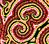
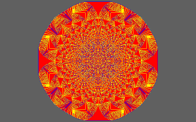
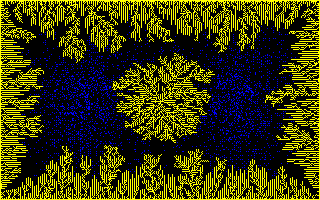
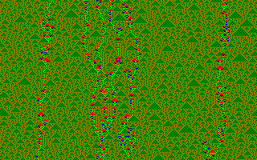
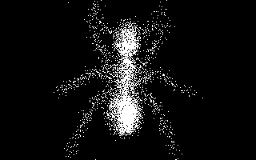

|  |
Cellular Automata Laboratory |
|
A collection of sample rules is provided with CelLab. These are the rules which are displayed by the WebCA demo. Each of these rules is available as a rule.jc file. For each rule there is also a rule.js file giving the JavaScript source code for the rule program which can be loaded into the Rule Program box to run the rule. For almost every rule, we also provide Java source code which can be compiled and run to create the .jc file for the rule.
Many of our rules are copies or variations of rules to be found in the 1987 book, Cellular Automata Machines, by Tommaso Toffoli and Norman Margolus. For each of our rules, the table below gives the most closely related rules from [Margolus&Toffoli87], with page number. Where our rule is identical to the one from Margolus & Toffoli, we put an equals sign.
| Rule Name | Same? | Margolus & Toffoli Related Rules |
Page |
|---|---|---|---|
| Aurora | |||
| Axons | |||
| Balloons | |||
| Banks | = | Banks | 42 |
| Bbm | = | BBM | 214 |
| Bob | |||
| Bootperc | |||
| Border | = | Border/Hollow | 113 |
| BraiLife | |||
| Brain | = | Brian's Brain | 47 |
| Byl and ChouReg | |||
| Critters | = | Critters | 132 |
| Dendrite, DenTim | Naïve-Diffusion, Dendrite | 84, 168 | |
| Earthgas | |||
| EcoLiBra | |||
| Endworld | = | EOW | 219 |
| Evoloops, EvoloopsAB | |||
| Faders | |||
| Flick | |||
| Forest | |||
| Fractal | = | Me-Neither | 132 |
| FredMem | Parity (w/7 bit Echo) | 31 | |
| Gasflow | |||
| Glooper | |||
| Griff | |||
| Gyre | |||
| Heat, HeatWave | |||
| HGlass | = | Hglass | 29 |
| Hodge | |||
| Langton | |||
| Lant | |||
| Life | = | Life with Echo | 23 |
| Logic | = | Logic | 136 |
| Meltdown | Safe-Pass | 78 | |
| Mite | |||
| Parks | |||
| PerfumeT | = | TM-Gas/Walls | 160 |
| PerfumeX | HPP-Gas (w/Wall) | 123 | |
| Pond | TM Gas, Circular wave | 131, 172 | |
| RainZha | |||
| Ranch | |||
| RevEcoli | |||
| Rug, RugF, RugLap | |||
| Runny | |||
| Sand | |||
| Sexyloop | |||
| ShortPi | |||
| Soot | TM-Gas, Dendrite | 131, 168 | |
| Spins | = | Spins-Only | 190 |
| SoundCa | |||
| Sublime | = | 2D-Brownian | 156 |
| TimeTun | = | Time-Tunnel | 52 |
| Turmite | |||
| Venus | |||
| Vote | Anneal (w/1 bit Echo) | 41 | |
| VoteDNA | |||
| Wator | |||
| Wind | |||
| XTC | HPP-Gas & TM-Gas | 123, 131 | |
| Zhabo, Zhabof, Zhaboff |
= | Tube-Worms | 83 |
Now I'm going to say a little about each of these rules, taking them in alphabetical order. For each rule, you can press the Play button at the right to load the rule into WebCA, ready to run by pressing its “Start” button.
We also include JavaScript (but not Java) definitions for the following “minor rules” from [Margolus&Toffoli87]. These rules are presented to illustrate facets of cellular automata rule development, but do not exhibit as interesting behavior as those described in detail below. Click on the name of the rule to run it in WebCA, where you can examine its definition in the Rule program box.
| Rule Name | Same? | Margolus & Toffoli Related Rules |
Page |
|---|---|---|---|
| Unconstrained Growth: | |||
| Diamonds | = | Diamonds | 38 |
| Squares | = | Squares | 37 |
| Triangs | = | Triangles | 38 |
| Constrained Growth: | |||
| Lichens | = | Lichens | 40 |
| Lwdeath | = | Lichens-with-Death | 40 |
| OneOf8 | = | 1-Out-of-8 | 39 |
| Voting: | |||
| Majority | = | Majority | 41 |
| Margolus Neighborhood: | |||
| Hppgas and HppgasM | = | HPP-Gas | 125 |
| Swapdiag and SwapDiagM | = | Swap-on-Diag | 125 |
| TMgasM | = | TM-Gas | 131 |
| TMgas_WallsM | = | TM-Gas/Walls | 160 |
| Tron | = | Tron | 134 |
The worldtype used here is that of a 1D two-neighbor ring. That means that EveryCell can see the low four bits of its left (west) neighbor and the low four bits of its right (east) neighbor. We call these two four bit quantities L and R respectively, and call the low four bits of EveryCell's own state C. Thus we are looking at a rule where cells effectively have sixteen states: binary 0000 through binary 1111 or decimal 0 through decimal 15.
The rule for Aurora is a one-dimensional version of the Rug rule: EveryCell's new state is taken to be one greater than the neighborhood average of L, C, and R. That is, we have
newstate = ((L + C + R) / 3) + 1
When a color value reaches 16, it is rounded back down to 0. The effect produced is like globby paint running down the screen, though really you are seeing “one-dimensional gliders” moving back and forth and interacting. Programs defining the Aurora rule are available in the JavaScript and Java languages.
I called the rule Aurora because when I visited Norman Packard's
office at the Institute for Advanced Study in 1985, he showed me a
smoother (eight visible neighbor bits and 255 colors) version of this
rule and remarked that it looked like the northern lights.
Aurora is one of five predefined 1D rules we include as samples, the
other being Axons, Parks,
ShortPi, and
SoundCa.
 The very simplest cellular automaton rules are one-dimensional
rules which have only two states, and where a cell's new state
is determined wholly by the L+C+R sum of
the cell and its two nearest neighbors. There are only 16
distinct rules of this type. The sixteen rules are obtained by the
sixteen different ways of filling four zeroes and ones into the
four spaces in the second line of a teensy lookup table:
The very simplest cellular automaton rules are one-dimensional
rules which have only two states, and where a cell's new state
is determined wholly by the L+C+R sum of
the cell and its two nearest neighbors. There are only 16
distinct rules of this type. The sixteen rules are obtained by the
sixteen different ways of filling four zeroes and ones into the
four spaces in the second line of a teensy lookup table:
| L+C+R | 3 | 2 | 1 | 0 |
| NewState | 0 | 0 | 1 | 0 |
|---|
These rules are spoken of as having a “totalistic Wolfram
Code” which is the integer gotten by regarding the four
bits put into the table as the four bits of a binary integer.
The table as illustrated holds the bits 0010, which is of
course binary for the number 2. So the illustrated rule has
totalistic Wolfram code number 2. (See
[Wolfram86] for details.)
The next level of generality is to look at one-dimensional CA rules of only two states whose new state is determined by the LCR contents of the cell and its two neighbors. At this next level of generality, we pay attention to the positions of the bits. There are 256 distinct rules of this type. The 256 rules are gotten by the 256 different ways of filling eight bits into the eight spaces in the second line of a tiny lookup table:
| LCR | 111 | 110 | 101 | 100 | 011 | 010 | 001 | 000 |
| NewState | 0 | 0 | 0 | 1 | 0 | 1 | 1 | 0 |
|---|
These rules have a “Wolfram Code” which is the integer gotten by regarding the eight bits put into the table as an eight bit binary integer. The table illustrated holds the bits 00010110 which is binary for 22. So the rule has Wolfram code number 22.
As it turns out, rule 22 is the same as totalistic rule 2: in each case a cell's new state is 1 if and only if there is exactly one firing bit among L, C, and R. But of course many rules are not equivalent to totalistic rules.
The rule Axons which we show is this same rule #22 (or totalistic rule #2)…with one extra feature. Axons is the reversible version of rule 22.
The trick for making Axons “reversible” is given in detail in my discussion of the Fractal rule below. For now, suffice it to note that, once Axons is running, you can press the “Swap” button in the Map section of the WebCA control panel to see the rule start running “backwards.”
I named this rule Axons after the long nerve fibers known as axons. These are up to several feet long, and are coated in a fatty sheath that pinches in every now and then. The Axons rule grows long fibers that are swathed in pinchy sausage casing, just like the cells. The fibers are continuous precisely because this rule is reversible. The existence of a firing cell, or of a hole in the cells, can't be forgotten (unless you bump into a mask cell). So the fibers bounce and tangle, but they never just stop.
In order that some complexity accumulates, a reversible rule needs some input, so I provide for mask cells which periodically pulse cells on. The existence of these periodic masks can of course interfere with perfect reversibility. In the case of Axons, the mask cells get covered over rather soon.
For the sake of elegance, I could have written Axons as a totalistic rule with code 2. “Wow, that's pretty! What's the program?” “Binary 10. The number two. I wonder if I can patent it.” Actually I wrote Axons as a general LCR Wolfram rule so that you can try putting different WolfCodes in, recompiling the rule, and running the variants.
If you use WolfCode 178 you get a really neat rule which I call Bamboo.
Here is the JavaScript rule definition of Bamboo.
/*
A one dimensional rule that only looks at one bit of two
neighbors. We run it as world type 3, which gets one bit from
each of 8 neighbors. The rule is totalistic, meaning that it
only looks at the SUM of its neighborhood. The rule is also
reversible, meaning that it saves its past state and XORs its
calculated new state with the past state. A final fillip to
make this rule look good is that I use my extra six bits of
state as a five bit clock and as a mask indicator. Whenever
the clock counts up to 31, I turn on the bits where mask is
on. The start pattern for this consists of two dots with bit
#0 turned on, all the times set to 0, and a pair of dots with
mask set to 1. You can vary the constant WolfCode to get
other pictures.
*/
rule.worldtype = 3; // 1D ring world, 8 neighbors
rule.patreq = "axons";
rule.palreq = "mask3"; // Only show low two bits
function axons(oldstate, l4, l3, l2, l1,
self,
r1, r2, r3, r4) {
var WolfCode = 178;
var sum, pastSelf, newSelf, newState, time, mask;
sum = l1 + self + r1;
pastSelf = (oldstate >> 1) & 1;
newSelf = (WolfCode >> sum) & 1;
newState = (self << 1) | (newSelf ^ pastSelf);
time = (oldstate >> 2) & 31;
mask = (oldstate >> 7) & 1;
return (time == 31) ? ((mask << 7) | newState | mask) :
((mask << 7) | ((time + 1) << 2) | newState);
}
Balloons was discovered by Brian Silverman using his “Phantom Fishtank” program ([Silverman87]). Balloons is written so it can be used as a template for making a high-resolution version of any interesting rule table you might want to try.
Balloons is driven by Silverman's Brain rule. If enough firing
Brain cells are together, they turn on a permanent firing cell.
These permanent firing cells serve as seeds around which more
turned-on cells agglutinate. If a turned on cell is entirely
surrounded, it changes state, so that one soon gets the effect
of cells with membranes. As a final fillip, if there is too
much excitement at a cell's membrane, the membrane bursts and
the cell goes over to a “dead” state which can
slowly be nibbled away by the ever active Brain rule.
/*
This realizes one of the RC ruletables. Any other RC
ruletable can be specified in the table below. The Balloons
rule was invented by Brian Silverman.
*/
rule.worldtype = 1;
rule.ruleName = "balloons";
rule.palreq = "rc";
function balloons(oldstate, nw, n , ne,
w, self, e,
sw, s , se) {
var ruleTable = [
/* EightSum
0 1 2 3 4 5 6 7 8 */
/* State */
/* 0 */ 0, 0, 15, 0, 0, 0, 5, 0, 0,
/* 1 */ 0, 0, 0, 0, 0, 0, 0, 0, 0,
/* 2 */ 0, 0, 0, 0, 0, 0, 0, 0, 0,
/* 3 */ 0, 0, 0, 0, 0, 0, 0, 0, 0,
/* 4 */ 4, 4, 8, 4, 4, 4, 4, 4, 4,
/* 5 */ 5, 5, 5, 5, 5, 7, 7, 9, 11,
/* 6 */ 2, 2, 2, 2, 2, 2, 2, 2, 2,
/* 7 */ 5, 5, 5, 5, 5, 13, 13, 9, 11,
/* 8 */ 8, 8, 10, 8, 8, 8, 8, 8, 8,
/* 9 */ 2, 2, 2, 2, 2, 9, 13, 9, 11,
/* 10 */ 10, 10, 0, 10, 10, 10, 10, 10, 10,
/* 11 */ 14, 14, 14, 14, 14, 14, 14, 14, 11,
/* 12 */ 12, 12, 4, 12, 12, 12, 12, 12, 12,
/* 13 */ 6, 6, 6, 6, 13, 13, 13, 9, 11,
/* 14 */ 14, 14, 14, 12, 14, 14, 14, 14, 14,
/* 15 */ 2, 2, 2, 2, 2, 2, 2, 2, 2
];
var eightSum = nw + n + ne + e + se + s + sw + w;
return ruleTable[(9 * (oldstate & 15)) + eightSum];
}
In 1971, Edwin Banks demonstrated [Banks71] a cellular automaton rule using only a single bit of state and looking at just four neighbors which was able to implement a universal computer: one able to compute any function of Boolean algebra. The rule can be described in just a few lines of code, but allows the creation of structures from which an aribtrarily complex computer can be built.
Everything is built from cells whose state is just 0 or 1. We have used color in these examples to distinguish components built from these cells, but the color plays no part in the operation of the rule; to see the rule running in its pure form, load the Mask1 palette.
Wires (which we color in white) are three cells wide and arbitrarily long. Signals which propagate along them are pairs of two black cells arranged on a diagonal; their relative orientation determines the direction of propagation along the wire. Signals can propagate along either edge of of the wire. A variety of components can be constructed which can be interconnected by wires. A dead end, shown in yellow, simply devours any signals which arrive at it; it is a necessary “stopper” for any signals for which you have no further use. A fan-out, shown in blue, accepts a signal from a wire and transmits it on three outbound wires 90° apart. A corner, colored in cyan, turns a signal 90°, keeping it on the same edge of the wire as it rotates. A clock, green, generates a pulse train of signals every 16 generations. And finally, a logic element, red, performs a B∧(¬A) operation on the signals arriving on its two inputs.
These primitive operations suffice to construct a NOR gate, from which a network that computes any Boolean function can be constructed, including a cross-over of signals without interference. The Apollo Guidance Computer was built entirely from three-input NOR gates.
The example shows, at the top, a shift register constructed from wires, fan-outs (one used as a corner), corners, and dead-ends, circulating a train of signals and emitting them onto two orthogonal wires where they are consumed by dead ends. In the middle, a clock feeds signals to a fan-out, which copies them to three outgoing wires. At the bottom, two clocks emit signals into a logic element which combines them to produce trains of two signals which propagate down an outbound wire.
For another rule which can be used to implement a universal
computer, see Logic.
BBM stands for “Billiard-Ball Machine”, a realization of a billiard-ball computer implemented as a one-state cellular automaton using the margolus evaluator. Particles move and collide much like Xgas in the PerfumeX and PerfumeM rules, but while those rules used different states to distinguish gas and motionless walls, here the walls and reflecting mirrors are made up of stable configurations of cells in the same state as the billiard balls. (They must be carefully constructed and placed on the lattice, lest they evaporate into moving particles.) The physics is different from that of physical colliding balls: two particles colliding head-on each depart at right angles to their prior directions of motion, and a particle which hits a mirror or wall is always reflected back along its path, regardless of the angle of incidence. Still, odd as it seems, the motion of the particles is consistent, conserves particle number, and is reversible if all motion vectors are reversed.
Billiard-ball models are important in the theory of
reversible computing,
demonstrating that it is theoretically possible to reduce the
energy dissipated by computing to an arbitrarily low quantity.
One can construct logic gates from colliding balls, and it
has been demonstrated that they are sufficiently general
to allow building a universal computer. Since our simulation
is reversible, it is possible to start with a highly-ordered
state, allow it to become randomized through collisions of
the balls with walls, mirrors, and one another, and then
reverse all the velocities and watch the subsequent collisions
restore the original pattern. Here is a
show demonstrating
reversibility in this rule.
The Bob rule was inspired by the Hodge rule described below; see that rule's description for more information. In the Bob rule, I use the standard default WorldType 0 where I only see one bit of each of my neighbors, so I must replace the averaging “Laplacian spread” component of Hodge by some other trick. I add the the number of nonzero neighbors to a nonzero cell's state. The patterns aren't that close to the patterns of Hodge, but they are interesting, and if you wait awhile you will see some Zhabotinsky action in the form of small paired spirals.
The Bob rule's standard startup is with the Bob pattern, using
the subtle grayscale Bob palette that incorporates touches of
yellow and red. The Bob pattern is a picture of
“Bob®”, the chief religious icon of the radical
mockery scorn religion called
The
Church of the SubGenius. “Bob” looks like the
typical 1950s cartoon Dad. As the Bob rule dissolves and
reforms “Bob”'s visage, he goes through a remarkable
series of image transformations, demonstrating the terrific
power of cellular automata for creative image processing.
It's also fun, by the way, to feed the “Bob” pattern to a straight averaging rule by loading the laplace user evaluator. Laplace turns “Bob” into a urine-stained tabloid newspaper photo of a “face on Mars.”
If you start the Bob rule from a random screen, it will take three or four hundred generations until you start seeing circular centers of activity, like bacterial cultures in a petri dish. After a thousand generations these centers have taken over.
/*
This is modelled on the Hodgepodge rule of Gerhardt and
Schuster, but is not a close enough model to produce a
Zhabotinsky reaction except after extremely long run
times.
The start pattern used is the Shroud of Turing visage of
"Bob". Bob is the High Epopt of the Church of the
SubGenius. For more information about Bob and the
Church, send $1 and a long stamped self-addressed
envelope to:
The SubGenius Foundation
Box 181417,
Cleveland Heights, OH 44118-1417
USA
The image of Bob is a registered trademark of the Church
of the Subgenius and is used by special arrangement with
Douglas St. Claire Smith, a.k.a. Ivan Stang. Inquiries
about further usage of Bob's image should be directed to
Mr. Smith c/o The SubGenius Foundation.
*/
rule.worldtype = 1; // 2D torus world
rule.ruleName = "bob";
rule.patreq = "bob";
rule.palreq = "bob";
function bob(oldstate, nw, n , ne,
w, self, e,
sw, s , se) {
var eightSum = nw + n + ne + e + se + s + sw + w,
sickness, newState;
if (oldstate == 0) {
if (eightSum == 0) {
newState = 0;
} else {
newState = eightSum | 1;
}
} else {
sickness = oldstate >> 1;
if (sickness == 64) {
newState = 0;
} else {
sickness = sickness + eightSum + 3;
if (sickness > 64) {
sickness = 64;
}
newState = (sickness << 1) | 1;
}
}
return newState;
}
 The Bootperc rule illustrates the process of
bootstrap percolation in
statistical mechanics. The rule is started with a random pattern in
which some fraction of cells are set to 1 with the others
zero. On each generation, zero cells look at their neighbors
(either 4 for the von Neumann neighborhood or 8 for the Moore
neighborhood) and, if the number of nonzero neighbors exceeds a
threshold (2 for the 4-neighbor case, 4 for 8 neighbors), become
ones. A cell, once set to one, remains forever in that state.
The Bootperc rule illustrates the process of
bootstrap percolation in
statistical mechanics. The rule is started with a random pattern in
which some fraction of cells are set to 1 with the others
zero. On each generation, zero cells look at their neighbors
(either 4 for the von Neumann neighborhood or 8 for the Moore
neighborhood) and, if the number of nonzero neighbors exceeds a
threshold (2 for the 4-neighbor case, 4 for 8 neighbors), become
ones. A cell, once set to one, remains forever in that state.
When run, one of two things will happen: either the map will evolve into a number of isolated domains separated by gaps, or else it will percolate—end up with all cells set to 1. Whether this happens is highly sensitive to the initial density of one cells. Below a critical density, the map will almost never percolate, while above it the map will almost always end up all ones. Near the critical density, whether or not the map percolates depends upon details of its initial random configuration. The critical density depends upon the neighborhood size, and is around 4.5% ones for the four neighbor case and 7.5% for eight neighbors.
Color is used to trace the waves of percolation, but plays no part in the operation of the rule. Initially set cells are displayed in white and do not change. Newly set cells in each generation are in green, and cells age over a color gradient from red to dark blue. You can see the percolation front proceeding from each nucleation site as a green wave leaving the rainbow behind it, with the oldest cells in dark blue. If the map completely percolates, the end state will be the white initially set cells on a background of dark blue.
When you run the rule, try stopping it after it has reached a steady
state and then use the “Random” button in the Pattern
section and its Density field to load patterns with different densities
and explore how they behave. The rule is initially set for the
eight cell Moore neighborhood. You can change this by editing the
rule program, changing the setting of the vonnN
variable, then pressing “Generate” to update the rule.
Border is a rule which uses two bits. One of the bits is a background “cycle” bit, and the other bit is a visible on/off firing/dead bit. The Cycle bit toggles Border between two modes: Flood mode and Hollow mode. In Flood mode, Border turns on any cell which is touching a firing cell. In Hollow mode, Border turns off any cell which is at the center of an all-firing nine-cell neighborhood.
The effect of Border is that lines keep getting thick, splitting into two, having the new pieces get thick and split to make four, and so on. Many of the Border patterns are reminiscent of the mathematical objects called “Cantor sets.”
Border starts from the pattern Square, but it could equally well
start from a single dot. The rule begins to get exciting when
the expanding square wave from the center wraps around the
screen edges and begins to interfere with itself. First the
pattern wraps top and bottom, and then it wraps right and left;
unlike CAM-6's 256×256 screen, our screen is a rectangle.
A good way to watch the interference patterns evolve is to use the arrow keys to pan the screen until the interference region is in screen center. This means that one fourth of the original square pattern is at each screen corner.
It is interesting to note that no matter how intricate the pattern gets, it is still the deterministic outcome of the simple Border rule starting on a single Square or Dot.
The border.js rule definition looks like this:
/*
This rule alternates between two cycles: In cycle 0,
every cell touching a firing cell is turned on. In
cycle 1, any cell which is the center of a block of 9
firing cells is turned off. Bit #0 is the firing bit
and bit #7 is the cycle bit.
*/
rule.worldtype = 1; // 2D torus world
rule.patreq = "square";
rule.palreq = "mask1";
function border(oldstate, nw, n , ne,
w, self, e,
sw, s , se) {
var nineSum = nw + n + ne + w + self + e + sw + s + se,
cycle = (oldstate >> 7) & 1,
newCycle = cycle ^ 1,
newSelf = 0;
switch (cycle) {
case 0:
newSelf = (nineSum > 0) ? 1 : 0;
break;
case 1:
newSelf = (nineSum == 9) ? 0 : self;
break;
}
return (newCycle << 7) | newSelf;
}
The BraiLife rule after 213 generations. A hauler is about to hit a butterfly just above and to the right of the center of the diamond shape.
When I first started hacking cellular automata on the CAM-6 in 1987, I couldn't quite see how to think of a completely new rule. So I decided a good way to start might be to try combining some of the old rules, particularly the rules Life and Brain.
Life is very interesting, but it tends to die out. Brain, on the other hand, is extremely hard to kill off; if anything, Brain is too persistent. So I thought I might try running Life and Brain in parallel, using Brain to stimulate Life, and using Life to dampen Brain.
At first I had every firing Brain cell turn on a Life cell, and had every firing Life cell turn off a Brain cell, but, run fullscreen, this reaction quickly wipes Brain out. You can see the fullscreen reaction by loading BraiLife and using the Bit Plane Editor to clear all the planes, set plane 4 to 1, and randomize plane 2.
Instead of letting Brain and Life interact across the whole screen, I set up the BraiLife start pattern as a disk-shaped mask in plane #4 and two firing Brain bits in plane #2. This is what you see if you load BraiLife and let it run unaltered.
Note how Brain grows an oriental-carpet-patterned diamond from a start of two adjacent firing blocks. Where this diamond sweeps across the limb of the central disk, Life cells are turned on within the disk. Some of the life manages to boil out into the black region outside the disk.
Graphically, the development of BraiLife makes me think of a UFO that hovers near the atmosphere of a fallow planet (these are the starting Brain dots). The UFO sets off an energy blast, and the shock wave of the blast sweeps across the planet like the EMP-spike from an H-bomb. But instead of being destructive, the UFO energy turns on living cells in the planetary sea. Some of these cells manage to crawl out and flap around in the planetary atmosphere. The UFO energy pulse breaks into spacecruising creatures who are usually poisoned if they try to return to the planet they seeded.
All this from a disk, two dots, and a few lines of code!
The way in which BraiLife runs two parallel rules is to cycle between doing one and the other. Only the bit in plane #0 is visible to neighbors, so each cell alternates between showing its firing Life bit in #0 and showing its firing Brain bit in #0.
Here is brailife.js:
/*
This rule runs Life and Brain in parallel and lets them
interact only within a certain masked region. In this region,
firing Brain cells turn on Life cells, and firing Life cells
keep Brain cells from turning on.
We use the eight bits of state as follows:
Bit #0 is used to show either the Brain
or the Life bit to neighbors;
Bit #1 is the Life bit,
Bit #2 is the firing Brain bit,
Bit #3 is the refractory Brain bit,
Bit #4 is the mask bit,and
Bit #7 is the cycle bit.
*/
rule.worldtype = 1;
/* The starting BraiLife pattern has all bit 7s set to 0
(for synchronized cycles), has two adjacent cells of
plane #2 turned on to start Brain, and has a big disk
mask in plane #4. */
rule.patreq = "brailife";
/* The brailife.jcc color palette looks at bits 4,3,2, &
1. I got my color palette by disabling planes 0,5,6,7 of
the default.jcc and saving it as brailife.jcc. */
rule.palreq = "brailife";
function brailife(oldstate, nw, n , ne,
w, self, e,
sw, s , se) {
var r = 0, l, newL, b, newB, bR, newBR,
mask, cycle, newCycle, eightSum;
eightSum = nw + n + ne + e + se + s + sw + w;
cycle = (oldstate >> 7) & 1;
mask = (oldstate >> 4) & 1;
bR = (oldstate >> 3) & 1;
b = (oldstate >> 2) & 1;
l = (oldstate >> 1) & 1;
if (cycle == 0) {
// Life update cycle
if ((eightSum == 3) || ((eightSum == 2) && (l == 1))) {
newL = 1;
} else {
newL = 0;
}
// Turned on by firing Brain cells within region of mask
if (mask == 1 && b == 1) {
newL = 1;
}
newCycle = 1;
r = (newCycle << 7) | (mask << 4) | (bR << 3) |
(b << 2) | (newL << 1) | b;
} else {
// Brain update cycle
if (((bR == 0) && (b == 0)) && (eightSum == 2)) {
newB = 1;
} else {
newB = 0;
}
// Turned off by firing Life cells within region of mask
if (l == 1 && mask == 1) {
newB = 0;
}
newBR = b;
newCycle = 0;
r = (newCycle << 7) | (mask << 4) | (newBR << 3) |
(newB << 2) | (l << 1) | l;
}
return r;
}
The one and only. There's lots of material on Brain in the Rule Definition chapter, explaining how to program it in JavaScript or Java.
To see the Butterfly Gun,
load the pattern
bflygun.jcp. My Butterfly Gun starts out with an
extra east-moving hauler whose purpose is to knock out a
west-moving hauler which the Gun spits out before getting into
its standard operation. I once saw a much smaller butterfly
gun; I think it only used three outriggers. If you find a small
butterfly gun, let me know and we'll put it in the next edition
of the manual.
Ever since John von Neumann posed the question in 1949 whether it would be possible to design a machine which could reproduce itself, then proceeded to find a solution in 1952, expressed as a cellular automaton which used 29 states per cell, an ongoing challenge has been to find simpler automata, both in terms of states per cell and the number of cells in the initial structure, which are capable of reproduction. (See the discussion of von Neumann's automaton in the Origins of CelLab chapter for additional details.)
In 1984, Christopher Langton described a self-reproducing automaton [Langton84] that used just 8 states per cell and an 86 cell initial pattern which replicates itself every 151 generations; see the Langton rule for an implementation. This was further simplified in 1989 by John Byl [Byl89], whose design requires 12 cells in 6 states and reproduces every 25 generations; this is implemented in our Byl rule. A further simplification was discovered by H.-H. Chou, J. A. Reggia, et al. [Reggia et al.93] in 1993, and implemented as the ChouReg rule. Its initial pattern is only 5 cells, with the replicator using 8 states and reproducing itself every 15 generations.
For the purpose of these rules, reproduction is defined as
“self-directed replication”: reproducing the initial
structure as directed by information contained within the
structure itself. This distinguishes such rules from the kind
of blind “reproduction” of rules which simply copy
cells without bound and is analogous to biological reproduction:
an organism replicates itself by using the instructions in its
genetic code to assemble a copy of itself, including the
genome.
This is a simple rule, implemented with the
margolus
evaluator, which complements a block of cells unless it contains
two cells in state 1. In addition, a block containing three
ones is rotated 180°. This has the effect, when started
with a pattern with a coherent block of cells in state 1, of
sending out “rowers” in the vertical and horizontal
directions, which interact with one another to produce new
static patterns that remain stable until another rower collides
with them. Rowers collide, and can bounce back or take off in
right angles to their original direction of motion. Since the
basic rule complements all states on each generation, we modify
it, as in the Critter-Cycle rule on p. 134, to compensate
for this by taking the temporal phase into account and using a
color palette appropriate to each phase.
The Dendrite rule. The white “gas” particles “freeze” to the red teapot shape, forming dendrites.
These rules both consist of a drifting “gas” pattern and a “frozen” seed pattern. The gas alternates between cycles of a) diffusing, and b) freezing if it is touching a frozen cell. The freezing process produces branching little dendrites of frozen cells. This phenomenon is a rough model for the physico-chemical process by which so-called accretion fractals are formed.
Dendrite shows a random gas and a frozen teapot; and DenTim shows a Tim-shaped gas and a frozen ant.
The programs for the rules are the same except that Dendrite requests a random initial gas and DenTim requests a Tim-shaped initial gas. The programs store the gas bit in plane #7 and the frozen-cell bits in plane #6. The cycle bit is in plane #5. If the cycle bit is 0, we update the gas diffusion; and if the cycle bit is 1, we update the freezing. The visible bit is always the bit in plane #0; as we change cycles we alternate between showing the gas bit or the freeze bit. Depending whether we are updating Diffuse or Freeze, bit #0 is showing the gas bit or the freeze bit. The rule starts up in cycle 0, so we start it up with some visible gas bits in plane #0. The dendrite.jcc color palette we use simply ignores all bits except #6 and #7.
The two rules use a cheap, imperfect method of mimicking gas diffusion. The trick is that at each gas update, each cell copies the gas value of one of its eight neighbors, the exact neighbor to be chosen at random. This is imperfect because it may happen that an individual firing gas particle may be copied by two or more of its neighbors (in which case one particle is splitting into several) or, just as bad, it may happen that an individual firing gas particle is copied by none of its neighbors (in which case a particle disappears). For a really good gas model, we would expect to have conservation of particles.
A gas with particle conservation can in fact be constructed (see the rules Sublime, PerfumeX, and PerfumeT), and we can indeed use these gases to grow dendrites as well (see Soot).
Why do the frozen cells of the Den… rules form those
branching dendrites? The reason is so simple that it nearly
evades comprehension: it is much easier for a randomly jostling
gas particle to bump into one of the dendrite's tips or
“capes” than it is for the gas particle to find its
way up into one of the indentations or “estuaries.”
This rule illustrates image processing with a cellular automata
rule. We start with a 256 color image of the full Earth taken
by the crew of Apollo 17 en route to the Moon, then apply the
randgas
evaluator, which swaps cells with randomly-chosen neighbors.
This makes the Earth diffuse away into space as if impish aliens
had aimed a gravity-cancelling ray at the planet. Since
the rule only changes the positions of cells and not their states,
it may be used on any 256 color image.
The EcoLiBra rule, a cross between Life and Brain.
This rule is a cross between Life and Brain. The basic idea is that the cells are divided between dark “sea” cells and light “land” cells. We run Brain in the sea, and on land we run not Life but AntiLife. All the land cells are normally firing cells, and the presence of an active AntiLife cell is signaled by having a land cell which is not firing. Full details on EcoLiBra are in the Cellular Automata Theory chapter.
The name EcoLiBra suggests 1) an ecology of Life and Brain, 2) a
balanced situation (equilibrium), and 3) the human intestinal
bacteria Escherichia coli, known as E. coli
for short. The third connection is perhaps a bit unsavory, but
remember that E. coli cells are in fact the favorite
“guinea pigs” for present day gene splicing
experiments. As one of the goals of CelLab is to
promote the development of artificial life, the designer gene
connection is entirely appropriate. I've given EcoLiBra a nice,
symmetric start pattern, but it also does fine if you use the
Bit Plane Editor to randomize
all bit planes.
Here is the JavaScript code for ecolibra.js:
/*
This rule runs Brain in the sea and AntiLife on land. Six or
seven firing Brain cells turn a sea cell into land. Seven
"antifiring" Antilife cells turn a land cell into sea.
*/
rule.worldtype = 1; // 2D torus world
rule.patreq = "ecolibra";
rule.palreq = "default";
function ecolibra(oldstate, nw, n , ne,
w, self, e,
sw, s , se) {
/* Here rather than thinking of bits, we think of state numbers.
State 0 is dead sea
State 1 is firing brain in sea
State 2 is refractory brain in sea
State 3 is dead land
State 4 is firing life on land */
var newState;
var SUM_8 = nw + n + ne + w + e + sw + s + se;
if ((oldstate & 1) != 0) {
newState = 3;
} else {
newState = 0;
}
if (oldstate == 0) {
switch (SUM_8) {
case 2:
newState = 1;
break;
case 6:
case 7:
newState = 3;
break;
default:
newState = 0;
break;
}
} else if (oldstate == 1) {
newState = 2;
} else if (oldstate == 2) {
newState = 0;
} else if (oldstate == 3) {
switch (SUM_8) {
case 5:
newState = 4;
break;
case 1:
newState = 0;
break;
default:
newState = 3;
break;
}
} else if (oldstate == 4) {
if (SUM_8 == 5 || SUM_8 == 6) {
newState = 4;
} else {
newState = 3;
}
}
return newState;
}
It is always possible to rewrite a block rule such as Bbm, which uses the margolus evaluator, to work in a standard neighborhood, using texture bits within the cell's state to keep track of its position and temporal phase. Endworld is a rule completely compatible with Bbm which uses the standard world type 1 evaluator. It is reversible and works, in part, because it keeps track of the previous state of cells. When you start it, you will see the particles evolve, bouncing off one another and becoming randomized. But, if you press the “Swap” button in the Pattern section of the control panel, all of their motions will reverse and the original, highly-ordered, pattern will be restored.
Even when the particles have seemingly become disordered, the
actual state of the map has extremely low entropy. Because
updates depend upon the previous state of every cell, there are
vastly more states in which this order does not exist than those
in which it does. Changing a single bit can precipate the
“end of the world”. Start the rule from the
standard pattern and let it run for a while. The billiard balls
bounce around as usual. Now change a single bit in the map
without making a corresponding change to its history. How do
you do that? Press “Pause”, enter
the command
“cell ^1 160 100”
in the Show box and press
“Run” to flip the cell in the middle of the map, and
then press “Start” to resume. Your single cell will
behave as a rift in the space-time continuum: a goof
bogon which starts spewing out other bogon particles that
spawn ever more as they collide with existing particles. Soon
the entire map will have degenerated into chaos. But the rule
remains reversible! Pause, press “Swap”, then
restart, and the damage will run back to the original calamity.
But since the cell state remains flipped, when it runs past that
point the chaos will return. Run the
Endworld show
for a complete example, including repairing the flaw at the
precise moment it occurred and returning to the point of departure.
Evoloops were invented by Hiroki Sayama [Sayama98] as a generalization of Langton's self-reproducing automaton (implemented here as the Langton rule) incorporating death and evolution. When Langton's rule is run in a finite space, such as our wrap-around world, the reproducing structures eventually collide with one another, breaking the reproduction process. When Evoloops collide, they create a state which cannot occur when the structures are reproducing in open space, and this state is used to trigger dissolution or death of the colliding structure, analogous to death of an organism due to exhaustion of resources (in this case, room to expand). Collision of structures may also result in mutation, as new valid structures (which may or may not be capable of reproduction) are created.
When started from a single self-reproducing structure (a generalization of Langton's automaton), it replicates until, due to wrap-around, copies begin to collide with one another. Then things get interesting. Some structures become invalid and die, others may be static structures or oscillators which do not reproduce, while yet others, different from the original, may be able to reproduce themselves. Now competition and selection kick in. A smaller self-reproducing structure replicates more quickly, so in a given time (measured in terms of generations of the cellular automaton), it will produce more offspring. Its larger ancestors not only are slower to reproduce, but are larger “targets” for collisions which may disrupt them. As the simulation runs (and you'll want to let it run for quite a while—interesting things are still happening 50,000 generations after the start), you'll generally see large progenitors be displaced by smaller descendants which, in turn, are supplanted by even smaller and faster-replicating successors, until the smallest possible viable replicator comes to dominate the world. You'll also observe structures which do not reproduce or attempt to reproduce but create non-viable offspring: these are eventually replaced by the successful replicators.
Precisely the same phenomenon is observed with bacteria. When in competition for finite resources, the fastest-reproducing organism will usually prevail, simply by outnumbering and starving the others. An extreme example of this is Spiegelman's Monster where, under extreme laboratory conditions, an organism which originally had a genome of 4,500 bases selected itself down to just 218 bases. There is no randomness in the Evoloop simulation—it is entirely deterministic. From the same start, you will always get the same result.
Another related experiment, EvoloopsAB, demonstrates the process of abiogenesis, or the origin of life from non-living precursors. Here, we define life as a structure capable of self-reproduction. The EvoloopsAB rule is identical to Evoloops, except that it starts with an empty (all zero) map and contains three sites which “seed” the map with a random “DNA” sequence generated by a stochastic state machine. These sequences grow from the seeding sites and turn and interact based upon their random sequences, but are not capable of reproduction. But eventually, as they and the structures they spawn collide and interact, a replicator will be “discovered” which can continue to reproduce independently of the seeds. You'll often see replicators appear, make one or a few copies, and then be wiped out by collision with a growing seed or some other structures spawned by the seeds. But eventually (since the seeds are random, the results will differ on every run), one or more replicators will become established and come to dominate the map. As before, smaller, faster replicators out-compete their larger cousins and, even if they aren't the first to appear, will usually become the most common.
Evoloops is an example of a rule which employs a user evaluator to transcend the usual limitations of CelLab. The rule needs to see four bits of state in the cell and its four neighbors, which adds up to twenty bits and requires a one megabyte lookup table, sixteen times larger than the CelLab standard. The rule definition and the vonn4 evaluator it uses create an auxiliary lookup table to accommodate the twenty bits of state. Programmers interested in implementing rules with larger state requirements than the default should examine the rule and evaluator code to see how it's done.
Complete details of the definition of Evoloops and an analysis
of their behavior is given in
Hiroki Sayama's Ph.D. thesis [PDF].
See Sexyloop for an extension of Evoloops
which adds gene transfer between organisms.
Faders is my pride and joy. I found Faders by playing with the rule editor in my original MS-DOS cellular automata program, while thinking about the similarities and differences between Life and Brain. What Life and Brain have in common is the threshold property: in each rule a dead (state 0) cell requires a certain number of firing neighbors to get turned on. Life requires exactly 3 firing neighbors, Brain requires exactly 2. The singular thing about Life is persistence: a firing Life cell keeps firing if it has either 2 or 3 firing neighbors, (otherwise it dies and goes back to state 0). The singular thing about Brain is memory: a firing Brain cell goes to a refractory state which "remembers" that it used to be firing, and only later does the cell transform to state 0, which can be restimulated to fire.
In Faders I perform a “genetic” cross between Life
and Brain by describing a rule which has threshold, persistence,
and memory. A dead Faders cell requires exactly 2
firing neighbors to get turned on. A firing Faders cell keeps
firing if it has exactly 2 firing neighbors. And when a Faders
cell leaves the firing state it goes into a sequence of
refractory states. Instead of having just 1 refractory state
(like Brain), the WebCA Faders has 127 refractory states.
This works because Faders is an “NLUKY rule” as described in the Theory chapter. WebCA can automatically generate and load NLUKY ruletables. For any positive integers n,l,u,k,y with l,u,k,y less than 10, use the Algorithmic Rule Specification dialogue to enter the values and show the appropriate “NLUKY rule”.
The white cells are the firing cells. When Faders has a clear screen, it grows rapidly, leaving slowly dissolving trails behind. What keeps it coming back is that it can lay down “eggs” or “seeds” of activity. These eggs take the form of three adjacent firing cells configured into a small right-angle L-shape. You might call them fader eggs. Each cell in one of these three cell fader eggs has exactly two firing neighbors, so they persist until the refractory color veils dissolve and they can start turning on dead neighbors.
Faders looks good if you start it on our Billbord pattern. You can start it on any other pattern; even on a random screen. If you do start Faders on a random screen, it will look like nothing is happening for awhile. Just wait. When you randomize, you fill most of the screen with refractory states, but usually there will be some of those angle-iron eggs lurking in the haze, and as soon as it clears away they'll start spreading order.
Actually one of the best ways to start Faders is from a simple three block L or angle-iron of state 1 blocks. This pattern is stored as faderegg.jcp.
The pattern seems to run endlessly and evolves in interestingly different ways according to whether you have WebCA in the plane nowrap mode or in the torus wrap mode. If you want to run it in nowrap mode, use the Rule Modes dialogue to select it before starting. The edges of the refractory faders patterns have an interesting fractal quality. The rule keeps laying down fader eggs that reseed the center. If you ran Faders from a single three-cell egg in an endless plane, I wonder how soon the pattern within some bounded N×N central region would repeat. For that matter, I wonder how soon it repeats on our screen? If you find out, please write.
We have Faders set to run with a special Faders color palette, but other color palettes can give good results. The color palette called autocad.jcc looks particularly good.
Here is the rule program for Faders. The program is actually designed to generate the lookup table for any NLUKY rule, according to how the variables at the top are set.
/*
Faders:
N = 127 L = 2 U = 2 K = 2 Y = 2
To evaluate any NLUKY rule, just change the parameters
in the definition below to the desired values.
*/
rule.worldtype = 1; // 2D torus world
rule.palreq = "faders";
function faders(oldstate, nw, n , ne,
w, self, e,
sw, s , se) {
var N = 127, L = 2, U = 2, K = 2, Y = 2;
var SUM_8 = nw + n + ne + w + e + sw + s + se;
var n = 0;
if ((oldstate == 0) && (L <= SUM_8) && (SUM_8 <= U)) {
n = 1;
}
if (oldstate == 1) {
if ((K <= SUM_8) && (SUM_8 <= Y)) {
n = 1;
} else {
n = 2;
}
}
if (((oldstate & 1) == 0) && (0 < oldstate) && (oldstate < (2 * N))) {
n = oldstate + 2;
}
return n;
}
Flick is named after “flickercladding,” the CA skin
which covers the robots in my books
Software and
Wetware. In Flick, we see
an AutoShade®d office whose rug is made of flickercladding
that runs the TimeTun rule. You can
tell which parts of the picture are “rug” because
these cells have their bit #7 set to 1.
/*
Flickercladding Interior Decoration
Conceived by Rudy Rucker
Drawn by Gary Wells
Modeled with AutoCAD
Rendered by AutoShade
Perpetrated by Kelvin R. Throop.
In this rule, we only change the cells whose high
bits are on. These cells are updated according to
the TimeTun rule.
*/
rule.worldtype = 1; // 2D torus world
rule.patreq = "openplan";
rule.palreq = "openplan";
function flick(oldstate, nw, n , ne,
w, self, e,
sw, s , se) {
var interest, oldSelf, newSelf, r;
var SUM_5 = n + w + self + e + s;
if (!BITSET(7)) {
r = oldstate;
} else {
oldSelf = (oldstate >> 1) & 1;
interest = (SUM_5 == 0 || SUM_5 == 5) ? 0 : 1;
newSelf = interest ^ oldSelf;
r = 0x80 | BF(self, 1) | newSelf;
}
return r;
// Test bit set in oldstate
function BITSET(n) {
return ((oldstate >> n) & 1) == 1;
}
// Place a value in a specified bit field.
function BF(v, p) {
return v << p;
}
}
Forest is a model of forest fire propagation as described in [Drossel&Schwabl92]. Trees, in green, catch fire if any of their eight neighbors are on fire, and also if struck by lightning with probability f (by default 0.00002) each generation. Burning trees become empty cells in the next generation. Empty cells have a probability p (default 0.002) to grow a tree each generation. When the density of trees is low, most lightning strikes empty ground or burns only one or a few trees. As the density of fuel grows over time, the forest becomes susceptible to cataclysmic wildfires which burn large regions. Eventually, you will see lots of small fires and a few very large conflagrations.
The behavior of the model is highly sensitive to the ratio of the parameters f and p, which you can adjust by editing the top of the evaluator function. Counter-intuitively, reducing the number of lightning strikes increases the number of large fires because it allows fuel to build up which permits the rare fire, once started, to propagate widely. This phenomenon is observed in forestry and is managed by controlled burns.
An age counter is used to display trees in sixteen intensities
of green based upon their age in generations, and to make flame
fronts fade after they have passed. This is simply to make the
display easier to understand; it plays no part in the behavior
of the rule. See the Mite and
Wator rules for other ecological simulations.
Fractal is a simple program which produces nice fractal patterns from a square. Each cell holds two bits: the present firing bit in plane #0 and a memory bit in plane #1. The rule says to look at five bits: the firing bits of your four diagonal neighbors and your own memory bit. If an odd number of these five bits are on, you turn on, and otherwise you turn off. Before writing down your new firing bit value, you store your present firing bit value in your memory bit.
Fractal is a “reversible” rule which means that if at any time you press the “Swap” button to swap the contents of plane #0 with plane #1, Fractal will run backwards, returning to its start pattern and proceeding onward into negative time.
Fractal is reversible because the rule for Fractal can be written this
way:
NewSelf = (Parity(Neighborhood) − OldSelf) mod 2
where Parity is 1 if
NE+NW+SE+SW is odd and 0 if
NE+NW+SE+SW is even. The
key thing about the equation just given is that, using the rules
of algebra, we are allowed to swap NewSelf and
OldSelf and get the equally valid
equation:
OldSelf = (Parity(Neighborhood)) − NewSelf) mod 2
This means that the rule for passing from new to old is the same as the rule for passing from old to new. Let's see why this means that pressing the “Swap” button makes Fractal run backwards.
If it is now time T, and plane #1 holds my screen at time T−1, then applying Fractal will: i) compute the screen for time T+1 and put this in plane #0, ii) meanwhile moving the old time T info from plane #0 into plane #1, and then iii) showing planes #0 and #1 on the screen.
Suppose that I now press “Swap” to interchange the info in planes #0 and #1. Now the time T info is in plane #0 and the time T+1 info is in plane #1. The fractal rule computes the parity of each time T cell's neighborhood and subtracts off plane #1 value. But because we pressed “Swap”, the plane #1 value is the cell value for time T+1. Therefore the equation
OldSelf = (Parity(Neighborhood) − NewSelf) mod 2
applies, and the value we compute is indeed OldSelf, the value at time T−1! So now time T−1 values are put in plane #0 and time T values are saved in plane #1. The next application of the Fractal rule calculates the values for time T−2, and so on.
/*
Based on Me-Neither rule, [Margolus&Toffoli87], p.132
*/
rule.worldtype = 1; // 2D torus world
rule.patreq = "square";
function fractal(oldstate, nw, n , ne,
w, self, e,
sw, s , se) {
var mem, sum, newSelf;
mem = (oldstate >> 1) & 1;
sum = ne + nw + se + sw + mem;
newSelf = ((sum & 1) == 1) ? 1 : 0;
return (self << 1) | newSelf;
}
Edward Fredkin invented the “parity rule” as a very simple example of “self-reproduction” in cellular automata. In the parity rule, a cell takes the sum of its neighbors and goes to 1 if the sum is odd, or to 0 if the sum is even. Thus a cell takes on the “parity” (oddness) of its neighborhood. If the shape of the neighborhood you are using includes k cells, then when you feed any small plane #0 starting pattern to the parity rule, you will soon have k copies of the pattern, and then you'll get k2 copies, and so on.
To make this rule a little more dramatic to look at, we use the extra seven planes as memory planes, so that plane #1 remembers plane #0's last pattern, plane #2 remembers the pattern before that, and so on.
It's fun to load a simple pattern in plane #0 and watch what Fredmem does with it.
We've written the rule for a nine-cell neighborhood. It works equally
well for a five-cell (N+E+W+S+Self) neighborhood, or even for a
three-cell (say N+Self+E) neighborhood. The three cell version with
only one bit of echo looks neat if you start with a square in one of
the screen's corners; you get things that look like hypercubes.
/*
The Fredkin rule with the seven extra bits used as memory
*/
rule.worldtype = 1; // 2D torus world
rule.patreq = "square";
function fredmem(oldstate, nw, n , ne,
w, self, e,
sw, s , se) {
var SUM_9 = nw + n + ne + w + self + e + sw + s + se;
return ((oldstate << 1) & 0xFE) | (SUM_9 & 1);
}
This rule models particles being carried along in the flow of a fluid, like the smoke which is sometimes used in wind tunnels to visualize the flow of air around an object being tested. The rule uses the gasflow evaluator, which performs random diffusion like Sublime, but with a twist. Particles are given a bias in favor of moving from left to right, creating a flow in that direction. By default, particles are 25% more likely to move to the right than to the left; you can change this by editing the evaluator and changing the flow parameter to a value between 0 (no flow: random diffusion) and 100 (particles never move to the left) and pressing “Compile” to update the evaluator.
Using the particles as tracers for pressure, you'll see pressure
increase on the leading edges of obstacles facing into the flow,
with regions of low pressure on the lee side. Note how flow
diverted around the circle “piles up” on the two
vanes downstream of it, which direct most of the flow back
toward the middle of the map. The rule runs in a closed toroidal
world, so particles which leave the map on the right come back in
at the left. Particle number is conserved.
This rule was inspired by the hydraulic economic computer in Terry Pratchett's novel Making Money, which, in turn was inspired by the real-world MONIAC model of the U.K. economy. Glooper uses the water evaluator to model the flow of a slightly compressible fluid under the force of gravity. Unlike almost all other CelLab rules, Glooper is continuous-valued: cells do not take on states from 0 to 255, but rather floating-point values with more than six decimal places of precision (IEEE single-precision floating point), representing the mass of fluid in the cell. On each generation, fluid flow between each cell and its four neighbors is calculated based upon their mass content. The map display shows the presence or absence of fluid (but not its continuous mass value) in blue and walls, through which fluid cannot flow, in yellow.
Because only the mass, but not the momentum and flow direction
of the fluid is modeled, the flow is more like that of a highly
viscous fluid like honey than water. The same techniques used by
the water evaluator can be extended to perform more
faithful finite element modeling
of physical systems all the way to two-dimensional
computational fluid dynamics.
Please see the Wind rule for an example
of such a simulation.
This rule demonstrates a cyclic cellular automaton as described by David Griffeath in his paper [Griffeath88]. Cells take on states from 0 to N−1, where N can be any value from 2 through 256. The value of N in the rule program defaults to 11, but you can edit it in the rule program box and press “Generate” to see how other values behave.
The rule works by having each cell, in each generation, choose one of its eight neighbors at random and compare its state to the cell's own state. If the neighbor cell's state is one greater than that of the cell modulo N (which means that if, for example, N is 11, the state one greater than 10 is 0), then the cell takes on its neighbor's state and is said to have been “consumed”—these rules are sometimes called “appetite rules”.
The starting pattern consists of an elliptical arena of mostly
zero cells with a few sparsely-distributed cells in random
values, surrounded by a sea of cells with random values. As the
rule runs, initially patches of one state will grow outward
from seeds at the edge into the oval, then interact and enter a
chaotic turbulent phase. This will then usually self-organize
into a Zhabotinsky-like pattern of interacting spirals. The
larger the value of N, the larger the spirals: if
N is a substantial fraction of the size of the map, the
waves may look more linear than spiral. Griffeath's original
rule was deterministic: a cell was consumed if any of its
neighbors were in the next higher state. This tended to produce
sharp-edged waves like our RainZha rule.
Our variant, which randomly chooses a single neighbor to examine
on each generation, creates more ragged, organic-looking
patterns, which resemble the growth of bacterial colonies in a
Petri dish.
While working on CelLab, I've enjoyed a number of conversations with William Gosper, who lives not too far away. Gosper achieved CA immortality by discovering the Life glidergun in 1971. He still takes a sporadically active interest in CAs, and he urged me to realize a rule which he thought of. This rule is Gosper's Gyre.
The idea behind Gyre is that we load an initial pattern into the
plane so that cells can tell which of the four quadrants they
are in. In each quadrant, the cells pass their plane #0 bits
around according to a scheme which produces a circling motion
around the origin. The interest of the pattern arises because if
I start out with a block of firing cells in one quadrant, the
block will “refract” as it passes through the
quadrant boundaries. Cells which are closer to the origin get to
the boundary before the more distant cells do, and they pull
increasingly ahead, drawing the original start pattern into a
spiral or “gyre.”
/*
Rule suggested by William Gosper. We lay down a mask
marking the Cartesian plane's four quadrants (Qs for short)
by the numbers 0-3 in the arrangement
2 0
3 1.
And we tell Q0 cells to copy SE, Q1 copy SW, Q2 copy NE, Q3
copy NW. A block of cell stuff will refract.
*/
rule.worldtype = 0; // 2D open world
rule.patreq = "gyre";
rule.palreq = "gyre";
function gyre(oldstate, nw, n , ne,
w, self, e,
sw, s , se
) {
var r, barrier, quadrant, newSelf = 0;
barrier = (oldstate >> 3) & 1;
quadrant = (oldstate >> 1) & 3;
// Barrier cells stay barrier cells
if (barrier == 1) {
r = 8;
} else {
switch (quadrant) {
case 0:
newSelf = se;
break;
case 1:
newSelf = sw;
break;
case 2:
newSelf = ne;
break;
case 3:
newSelf = nw;
break;
}
r = (quadrant << 1) | newSelf;
}
return r;
}
The Heat rules and the Rug rules are all variations on a rule where a cell's new state is based on the average of the states around it. In both Heat and Heatwave, we use the toroidal WorldType 10, whose inner loop returns five bits of the cell's old state as well as the eleven bit sum of the cell's eight eight-bit neighbors. And in both rules we divide this full eightsum by eight. The difference between Heat and HeatWave is that HeatWave adds two to the average.
The special feature of Heat and Heatwave is that some of the cells are kept at fixed values. In particular, if a cell's low bit is on, the cell is not updated: the cell is simply kept at a fixed value. Specifying the cell's fixed value is a bit tricky because WorldType 10 only gives you five bits of the cell's state. As my purpose in writing Heat was to simulate heatflow between two objects of different temperatures, what I do is to suppose that the odd states with low five bits 1–15 are fixed at the low values 1 to 15; and that the odd states with low five bits 17–31 are fixed at the high values 128+17 to 128+31. Relative to a continuous modular ring of 256 eight-bit values, 128 is as far as you can get from zero.
The Heat pattern includes a large assemblage drawn in state
128+31, as well as a leaning block in state 1. The
“hot” assemblage sends out waves of high state, but
the “cool” block seems to do nothing. In order to
see both blocks in action, energize the background by putting in
some random mid-temperature gas. You can do this by entering the
Bit Plane Editor
dialogue and using the “Initialize Map
Planes” section to fill plane #7 with random bits.
If anything, Heat works too well, converging very quickly to a boring equilibrium state. In HeatWave we keep cycling the colors of the non-fixed cells. Ultimately this leads to turbulent chaos in the nonfixed regions. HeatWave looks really gorgeous when run with the pattern startrek.jcp, which is an AutoCAD line drawing of the starship Enterprise.
JavaScript and Java code defining the Heat rule is presented in the Defining Rules chapter.
This is a five-neighbor two-state two-dimensional cellular
automaton found at random by Margolus and Toffoli. It organizes
a nice sliding flow on a random screen, and it disassembles
solid starting patterns in an interesting way.
/*
The Hglass rule from page 29 of Margolus and Toffoli.
*/
rule.worldtype = 1; // 2D torus world
function hglass(oldstate, nw, n , ne,
w, self, e,
sw, s , se) {
var r = 0;
switch ((16 * e) + (8 * w) + (4 * s) + (2 * n) + self) {
case 1: case 2: case 3: case 11: case 21:
case 25: case 29: case 30: case 31:
r = 1;
break;
default:
r = 0;
break;
}
return r;
}
Hodge is inspired by a cellular automaton rule called “the Hodgepodge machine,” (see [DewdneyColumn88a]). The Hodgepodge rule was invented by Martin Gerhardt and Heike Schuster of the University of Bielefeld in West Germany. For whatever reason, Gerhardt and Schuster chose to describe their rule in terms of the spread of a disease. A cell in state 0 is thought of as “healthy” and a cell in state 128 is thought of as truly “ill”. Cells in states 1–127 are thought of as being “sick” in varying degrees. The Hodgepodge rule eventually begins producing spirals like the Zhabotinsky reaction.
The Hodgepodge rule is formulated in terms of two constants
g and n:
These three conditions are 1) ragged start, 2) Laplacian spread, 3) synchronizing cutoff.
Below is the JavaScript code for Hodge. The world type 10 is tailormade for averaging neighbors. In this world type we are only allowed to see five bits of EveryCell's OldState, so the cutoff value n has to be the largest number expressible in five bits: 31. An increment g value of 5 seems to work best here.
Hodge is a lovely rule which converges very rapidly. It looks nice with the color palettes Default, AutoCAD, and Ranch. Particularly with AutoCAD color, the patterns look extremely organic, suggesting successive microtomed cross-sections of a human brain.
Suppose you push the microtome concept and begin thinking of Hodge as generating a three dimensional stack of planes—just as a one dimensional rule generates a two dimensional spacetime sheet of stacked lines. When you look at Hodge (or at other Zhabotinsky reactions) you are seeing very striking three dimensional structures; things like paired vortex sheets in the surface of a river below a dam, the scroll pair stretching all the way down to the river bottom…to a fortuitous inhomogeneity in Hodge's random start.
Another thought: In three dimensions, a Zhabotinsky reaction would be like two paired nautilus shells, facing each other with their lips blending. The successive layers of such a growing pattern would build up a shape very like…a fetus!
Hodge is also interesting if you give it a bilaterally symmetric start; this leads to patterns that remind me of fanciful chinese lions with popeyes and twin-scroll nostrils. A good bilaterally symmetric start can be gotten by loading the rug.jcp pattern in nowrap mode and scrolling part of the pattern off the top of the screen. This leaves the left/right symmetry but breaks the up/down symmetry. This must be done before loading Hodge, because world type 10 rules like Hodge do not admit a nowrap mode. Once the pattern is set, feed it to Hodge. As the pattern settles in, try fooling with different color palette selections. Eventually you will get a living pattern, which you can save by right clicking on the map display and using your browser to save the image.
rule.worldtype = 10; // 2D open semitotalistic rule
function hodge(oldstate, SUM_8) {
var temp = 0;
if (oldstate == 0) {
if (SUM_8 < 5) {
temp = 0;
} else {
if (SUM_8 < 100) {
temp = 2;
} else {
temp = 3;
}
}
} else if ((oldstate > 0) && (oldstate < 31)) {
temp = ((SUM_8 >> 3) + 5) & 255;
}
if (temp > 31) {
temp = 31;
}
if (oldstate == 31) {
temp = 0;
}
return temp;
}
Langton's Ant was invented by Christopher Langton in 1986. It is a two-dimensional Turing machine with a head (ant) that moves on a map of cells which can be in one of two states. In each generation, the head moves to an adjacent cell, inverting the state of the cell it departs. The head can move in one of the four directions in the von Neumann neighborhood; the direction it moves is set by the current state of the head. Upon moving to a new cell, the head adjusts its direction by turning clockwise if the cell's state is zero and counterclockwise if it is one.
When started with an all-zero map, the head starts by tracing
out a lacy pattern exhibiting symmetries, but then, as the
pattern grows, appears to be following a random walk, occasionally
adding to the borders of the pattern. After around 10,000
generations, however, the head will begin to create a
“highway” which extends in a diagonal direction in
a cycle of 104 generations. This is an example of spontaneous
emergence of order after a long period of apparently chaotic
behavior. If run on an infinite map, the highway would extend
without bound, but on our wrap-around map, it will eventually
collide with the original random pattern, producing interesting
interactions. All starting configurations which have been
tested eventually produce a highway, but it has not been proved
that every possible configuration does so. It has, however, been
proved that the pattern always grows without bound in some manner.
Try starting the rule on the square pattern and watch how
it evolves into a lattice of ordered highways and burl-like
intersections. See the Turmite rule for
another, more complicated, moving-head Turing machine.
This is Langton's self-reproducing machine. The inspiration of the Langton rule is discussed in the Origins of CelLab chapter; the User Evaluators section describes how the WebCA version of Langton was written.
The rule runs in a closed toroidal world, and the reproduction will eventually stop when wrap-around causes reproducing patterns to collide with previously-created ones. In an infinite plane, the patterns would reproduce forever.
See the Byl and ChouReg rules for simpler
self-replicating structures and Evoloops
for an example of evolution in reproducing patterns and the
generation of replicators from a non-replicating “primordial
soup”.
The version of Life we show here echoes plane #0 into plane #1. This means that cells will be differentially shaded according to whether they have the low two bits:
| 00 | Was off and is off | Blank |
| 01 | Was off and is now on | Newborn |
| 10 | Was on and is now off | Newly dead |
| 11 | Was on and is now on | Established |
This particular shading enables the eye to easily pick out the regions
of greatest activity. If you would prefer to see vanilla, untinted
Life, load the color palette mask1, which colors all odd
states white and all even states black.
Two Life patterns interesting to load are rpent and glidrgun. See the Theory chapter for much info about Life.
Can you simulate an arbitrary logic circuit with a cellular automaton? Yes you can! Of course, it has been proved that a number of cellular automaton rules, as simple as Wolfram's Rule 110, are Turing complete and hence can perform any deterministic computation. But often the preparation of the initial state for such rules is enormously contrived and requires more computation than getting the answer out. It's interesting to see whether a cellular automaton can emulate the logical operations upon which we build the digital circuits used by our computers and, indeed, it can.
The Logic rule, which uses the margolus evaluator, implements the fundamental operations of digital logic: the ability to duplicate signals (“fanout”), cross-over signals without interference, invert signals (changing one bits into zeroes and vice versa), and the and operation (taking two inputs and emitting a one bit only if both inputs are ones). The combination of the operations of invert and and (NAND) suffice to compute all of the functions of Boolean algebra.
The sample pattern demonstrates these fundamental logical operations. Wires are shown in blue, bits flowing along the wires in red, and isolated bits, which do not move but may complement the value of bits passing on adjacent wires are displayed in green. Annotations in grey play no part in the evolution of the rule. Each example is driven by a shift register which recirculates a pattern and emits it to the output wire.
It is straightforward to build an exclusive or (XOR) gate from the primitive operations of and and invert. Who will be the first to build a linear feedback shift register pseudorandom number generator using the primitive operations of the Logic rule?
See Banks for an even simpler rule which can
be used to build a universal computer.
Meltdown uses the generic Owncode rule definition and invokes
the meltdown
evaluator which swaps pairs of cells in a column if the
top cell has a higher state number than the one below it.
This causes the contents of the map to “melt down”, with
the higher valued cells at the bottom and the lower value cells
above. This makes a column-by-column histogram of the contents
of the map. To run this rule, select the Owncode rule from the
and the Meltdown evaluator; you can use the Owncode rule to run
any evaluator which does not require a lookup table.
 Mite is a simulation of a predator-prey ecology developed by Dan
Drake. It models a strawberry field (the black background)
being attacked by mites (green) which, in turn, are being eaten
by predatory mites (red). Started from a simple pattern of a
block of prey with a few predators in the center, it evolves
into a complex and ever-changing landscape where islands of prey
grow, only to be colonized and devoured by predators with which
they eventually come into contact. See the
Forest and
Wator rules for other ecological simulations.
Mite is a simulation of a predator-prey ecology developed by Dan
Drake. It models a strawberry field (the black background)
being attacked by mites (green) which, in turn, are being eaten
by predatory mites (red). Started from a simple pattern of a
block of prey with a few predators in the center, it evolves
into a complex and ever-changing landscape where islands of prey
grow, only to be colonized and devoured by predators with which
they eventually come into contact. See the
Forest and
Wator rules for other ecological simulations.
It is possible to model and carry out any possible computation as a two dimensional cellular automaton. It is known that Life, in particular, can be used to build a “universal computer.” Streams of gliders act like signals and other kinds of patterns act as memory blocks and as logic gates.
Can one dimensional cellular automata carry out universal
computation? Yes, if we allow the cells to have many (about a
hundred) different states. But can it be done with only
two states, as in Life? Parks is a totalistic
one-dimensional, two-state, six-neighbor CA rule that is thought
to be promising. As reported in
[Dewdney88], p. 143, James K.
Park found a bidirectional “glider” gun for this rule which
shoots moving patterns out to the right and to the left.
/*
Park's one dimensional glider gun
This rule definition is used to demonstrate James K.
Park's one dimensional glider gun. The rule
definition program is capable of generating any one
dimensional, two-state line automaton with
neighborhood radius between 0 and 4, as defined in
the chapter titled "One-Dimensional Computers" in:
The Armchair Universe by A. K. Dewdney: New York,
Freeman, 1988. (ISBN 0-716-71938-X).
The program is parameterised by the definitions of
Radius and CodeNumber given below. Radius specifies
how many cells on either side of the cell being
updated are summed with the cell itself. Radius may
range from 0 to 4, the maximum neighborhood allowed
by WebCA in two-state mode. The CodeNumber gives,
when expressed in binary, the bit coded new state
for each possible sum of the neighborhood. For
example, Park's glider gun exists in the world with
Radius 3 and CodeNumber 88 (decimal). Each cell is
then updated by counting the number of on cells in a
neighborhood that looks like the following:
L3 L2 L1 SELF R1 R2 R3
This yields a sum of on cells that between 0 and 7.
The CodeNumber therefore encodes 8 possible
results. Writing 88 as 8 binary digits, we obtain
01011000. These digits give the new state based on
the number of neighbors as follows:
neighbors on: 7 6 5 4 3 2 1 0
New state: 0 1 0 1 1 0 0 0
If you define rule.patreq, that pattern file will be
loaded automatically. In this example we load
Park's glider gun, which consists simply of the
pattern of values:
1 1 1 1 1 1 1 1 1 1 0 1 1
stored in cells at the centre of the top line of the
screen.
We run this example with a world type of 3. In a
toroidal world the gliders created by the glider gun
annihilate one another and thus don't mess up the
glider gun; in an infinite world they would continue
forever.
*/
rule.worldtype = 3; // 1D ring world, 8 neighbors
rule.patreq = "parks"; /* The parks pattern is 1111111111011.
The pattern spews gliders left & right. */
rule.palreq = "mask1";
function parks(oldstate, l4, l3, l2, l1,
self,
r1, r2, r3, r4) {
var Radius = 3; // Radius of neighborhood (Dewdney's R)
var CodeNumber = 88; // Totalistic action code number
if ((Radius > 4) || (Radius < 0)) {
alert("Hey!!! Radius must be 0 <= Radius <= 4." +
" You specified Radius = " + Radius);
return -1;
}
if (CodeNumber > (1 << ((Radius * 2) + 2))) {
alert("CodeNumber setting of " + CodeNumber +
" inconsistent with" +
" Radius setting of " + Radius +
". The maximum valid" +
" CodeNumber for this Radius is " +
(1 << ((Radius * 2) + 2)));
return -1;
}
var i, sum;
var nbrhood = new Array(9);
/* Place the neighbor values in an array so that the sum
can be calculated in a loop controlled by the setting
of Radius. */
nbrhood[0] = l4;
nbrhood[1] = l3;
nbrhood[2] = l2;
nbrhood[3] = l1;
// nbrhood[4] = self; Not actually used.
nbrhood[5] = r1;
nbrhood[6] = r2;
nbrhood[7] = r3;
nbrhood[8] = r4;
// Count dem bitz in de 'hood.
sum = self;
for (i = 1; i <= Radius; i++) {
sum += nbrhood[4 + i] + nbrhood[4 - i];
}
// Return result derived from CodeNumber.
return ((CodeNumber & (1 << sum)) != 0) ? 1 : 0;
}
These four rules show various ways of simulating “lattice gases.” A lattice gas is a simulation of a physical gas that represents gas particles by zeroes and ones in a lattice or grid. WebCA is pretty good at showing lattice gas, though other ways of simulating lattice gases are possible.
Our WebCA demos show five kinds of lattice gas in all. There is the “naïve diffusion” lattice gas of Dendrite and DenTim. There is the “Brownian” lattice gas of Sublime. There are the two Margolus and Toffoli gases I call Xgas and Tgas. PerfumeX and PerfumeM show Xgas. PerfumeT, Pond, and Soot all show Tgas. The rule XTC shows Xgas and Tgas at the same time. Finally, PerfumeR shows a gas with diffusion driven by an external randomizer.
The main difference between Xgas and Tgas is that Xgas particles move along the screen's diagonals and Tgas particles move horizontally or vertically along the screen's main axes. In both gases, the particles bounce off each other and off the barrier cells we call “walls”. Tgas bounces cleanly off the walls; Xgas does an odd little loop inside a wall when it bounces.
In both Perfume rules we start with two perfume bottles, one
open and one loosely stoppered. Each bottle holds a cloud of
gas. At startup, the gases simply try to move along the four
directions that are natural to them. But then they run into the
perfume-bottles' walls, bounce off, and begin bouncing off each
other. Sooner or later the particles find their way out of the
bottles and into the “room.”
An important feature to note about the PerfumeT, PerfumeX, and PerfumeM rules is that no external randomization is being used. The gas particles disperse in clouds, but these clouds are strictly a deterministic result of the bouncings induced by the irregular shapes of the perfume bottles' walls. The gases are, if you will, self-randomizing. The PerfumeR rule does use an external randomizer to determine the direction gas particles will move, and produces more realistic diffusion of the gas.
The particular trick by which the gas motions are achieved was developed by Norman Margolus, and is explained in the Theory chapter. As these rule programs are somewhat lengthy, I won't show them here. Instead I'll just list how the bits are used by the rules:
| Bit #0 | is the machine visible bit for update |
| Bit #1 | is used for the gas |
| Bit #2 | is the wall |
| Bit #3 | is the touch wall in my neighborhood bit |
| Bits #4 & #5 | hold a position number between 0 and 3 |
| Bit #6 | controls the check wall/do gas cycle |
| Bit #7 | controls the A/B lattice cycle |
The PerfumeM rule is identical in operation to PerfumeX, but is written using the margolus evaluator, which automatically keeps track of all of the housekeeping bits, dramatically simplifies the rule definition program, and allows the rule to run almost twice as fast. If you're implementing lattice gas rules, this is generally the way to go. This is the entire definition of the PerfumeM rule.
/*
This is HPP-GAS/WALLS rule from Toffoli & Margolus,
discussed (but not given explicitly) in section 15.2, p.
159.
This version uses the "margolus" evaluator, which
does all of the spatial and temporal phase for us,
allowing us to use the logical relative neighbors.
*/
rule.worldtype = 13; // 2D torus world, user evaluator
rule.patreq = "perfumem";
rule.palreq = "perfumem";
rule.ocodereq = "margolus"; // Margolus neighborhood
function perfumem(oldstate) {
// Extract Margolus relative neighbors from oldstate
var CENTER = BITV(0),
CW = BITV(14),
CCW = BITV(12),
OPP = BITV(10);
// You only need these if you care about plane 1 values
var CENTERp = BITV(1),
CWp = BITV(15),
CCWp = BITV(13),
OPPp = BITV(11);
// Return bit from oldstate
function BITV(p) {
return (oldstate >> p) & 1;
}
// Now, after all the boilerplate, this is the entire rule
return (wall() ? CENTER :
(collision() ? CW : OPP)) | (CENTERp << 1);
// Detect a collision between two particles
function collision() {
return (CENTER == OPP) &&
(CW == CCW) &&
(CENTER != CW);
}
// Detect the presence of a wall
function wall() {
return (CENTERp | CWp | OPPp | CCWp);
}
}
Pond is two copies of Tgas. To improve the contrast, we only
show the cells which hold two particles of gas. Pond's startup
has a white square of particles immersed in a sea of random
particles. The particles of the white square spread out,
bouncing off the other particles and creating a circular
pressure wave. The fact that the square block produces a
circular wave is rather striking, suggesting that this
simulation really is somewhat like a physical system.
RainZha is the simplest “Zhabotinsky” style cellular
automaton I have found. I call a rule a Zhabotinsky-style rule
when it spontaneously generates spirals from an initial random
soup. For reasons I don't yet fully understand,
Zhabotinsky-style rules are fairly common in the world of
cellular automata—perhaps as common as are Sierpiński
gaskets in the world of
fractals.
The program for RainZha is the exactly the same as the Faders
program listed under the Faders rule,
with N=8, L=2, U=3, K=2,
and Y=2. See the discussion of “NLUKY”
rules in the Theory
chapter for details. The consequences of larger choices of
N can be explored in WebCA by loading the Rainzha rule
program, editing the value of N, then generating the
modified rule. For larger values of N it may take the
rule too long to Zhabotinsky down. You can ease up to a larger
N by repeatedly changing the rule, increasing the
N value by, say, 10 each time. If this is done, then
the old spirals help seed the new ones.
I designed Ranch using a CAM-6 board in the fall of 1987. The idea behind the rule is to run Life and Brain in an environment that is partitioned in two by Vote. Full details and program listing for Ranch are in the Theory chapter and in [Rucker89].
Ranch is set to randomize planes #0 and #1 at startup. This illustrates the emergence of a pattern from randomness, but has the bad effect of destroying the low two planes of any pattern you feed Ranch. You might want to load the Rule Program for Ranch, delete the “rule.rseed” lines, and re-Generate so that you can feed, say, the Tim pattern to it.
The Ranch color palette ranch.jcc happens to look good with many other rules, such as Hodge.
This rule was created simply to show that we can define reversible four-bit rules just as well as reversible 1-bit rules like Fractal and TimeTun.
RevEcoli is based on the rule EcoLiBra,
which calculates a new four-bit state on the basis of the
present neighborhood. To make our rule reversible, we use the
high four bits of OldState to store the prior four-bit state
PastState, and we compute the NewState by the equation:
NewState = (16 + EcoLiBra(PresentNeighborhood) − PastState) mod 16
(We add in the 16 to make sure that the mod operation never gives us a negative number.) As was explained in our discussion of the Fractal rule above, we can exchange NewState and PastState in this equation, and this guarantees reversibility. To see RevEcoli run backwards, start it up, let it run for awhile, and then swap planes #0–#3 with planes #4–#7 using the Bit Plane Editor dialogue.
RevEcoli very quickly turns an ordered start into seething dog barf, so it is a bit of a surprise to see the original four bit pattern re-emerge. This is even more striking if you create the original start pattern yourself. RevEcoli can turn 16-color images into secret static that can be decoded, as long as you know the process is based on EcoLiBra!
Note that the same process can be carried out for any other rule. I used EcoLiBra because it was handy, and because EcoLiBra does not use the high four bits of OldState. Since these bits were conveniently vacant, I use them to store the cell's four bit PastState.
This suggests a fairly simple encryption scheme which can be carried out with our CA. First you and your partner need to agree on i) a number B (≤ 4) of bits for your rule to use, ii) a rule F which takes B bits of OldState and eight bits of neighbor state and gives a B-bit state we call F(PresentNeighborhood), iii) the number T of steps to run.
Now you and your partner create a rule RevF defined by
NewState = (2B + F(PresentNeighborhood) − PastState) mod 2B
Knowing which F you plan to use is the “secret
key” part of the transmission. There are an effectively
infinite number of these keys.
Once you have RevF, you can send a message by coding your info up into a B-bit graphics screen, and running RevF on this screen for T steps. Suppose that, to make things easier for your partner, you also go ahead and use the Bit Plane Editor to exchange the low B bits of the screen pattern with the next higher B bits of the screen pattern. Then you save the pattern, as message.jcp, which you send to your partner. Your partner has the revf.jc ruletable all set, and can immediately feed message.jcp to RevF. After T cycles, your original pattern will be there on your partner's screen. Try running RevEcoli on the crypto pattern and watch what happens!
The Rug rules are all averaging rules using the full range of 256 possible states. For each cell a neighborhood average is computed and the new state is the average plus one.
In general the Rug rules will look better when the wrap is turned off. The existence of a fixed zero boundary gives the rule some information input to react to. (Recall that in the Heat rules we can fix selected cells by setting their low bits to one).
If you start a Rug rule on a blank screen in open nowrap mode, a
chaotic carpet will slowly grow inward, eventually filling the
whole screen. Rug averages the neighboring eight cells, but RugF
averages only the neighboring four cells.
RugF runs faster,
though its patterns are prone to developing checkerboards.
RugLap is a bit slower than
Rug because RugLap uses the mathematically correct averaging
technique for best approximating a solution to Laplace's
equation:
LaplaceAverage = (4 × (N + E + S + W) + (NW + NE + SE + SW)) / 20
Although RugLap cycles slower, it converges to a solution in many fewer steps than do Rug and RugF.
WebCA comes with a saved Rug pattern, the fruit of three hours computation of Rug on a blank, nowrap screen. If you press the up arrow key a few times you can break the fourway symmetry down to a bilateral symmetry. Or you can press the left arrow key a few times to shift the pattern as it runs. Rotate your monitor 90 degrees and there's a high-res Maxine Headroom!
Many color palettes look good with Rug. AutoCAD gives it a sinister, seething, Giger-like quality. Stripe, Ranch, and Bob are also good color palettes for Rug, but best of all is Bleach, a color palette with a sixteen cycle gray scale.
JavaScript and Java code for the Rug rule is given in the Defining Rules chapter. RugF and RugLap are the same, except that they call, respectively, the semi4 and lapinc evaluators instead of semi8.
Runny is similar to Meltdown, but here
the rule is that a cell swaps position with a cell to its south
only if that cell is in state 0 (which, in most color palettes,
displays as black). This has the effect of causing non-black cells
to move down the map like runny paint, while black cells percolate
through them to the top of the map. It causes nonzero cells to pile up
at the bottom of the map without changing their relative order.
Runny uses the generic Owncode rule definition and invokes
the runny
evaluator. The rule does not examine the states of cells other
than testing them zero or nonzero, nor
does it use a lookup table; it may be used on any map.
 The Sand rule implements the Bak-Tang-Wiesenfeld sandpile model [BakTang&Wiesenfeld87]. In each generation, a single grain of sand falls on the cell at the center of the map. When the pile of sand in any cell reaches a height of four grains, it becomes unstable and topples, with the four grains it contains distributed to its four von Neumann neighbors. If this process results in one of more of the neighbors containing four grains, they in turn topple and the process continues until no cell contains four grains. This was the first model discovered which exhibits the property of self-organized criticality. The system exhibits avalanches whose size follows a power law: many small, local events, and a few rare large ones.
Color is used to represent the number of grains in each cell: grey for none, blue for 1, yellow for 2, and red for 3. Since a cell with four grains immediately topples, no cell can contain more than three grains. As the pile grows, you will see how the addition of a single grain can cause cascades of all sizes. While you might expect a smoothly growing structure, in fact the depth of the sand in the pile exhibits a complex fractal pattern that emerges as the pile grows. The edges of the map consume any grains which reach them: they limit the growth of the pile.
If you're patient and have a high-resolution screen, try running Sand in the
double-wide simulator—it will
produce intricate mandala patterns. The Sand rule is entirely implemented
within the sand user evaluator.
This is an interesting mathematical model which has proved useful in
analyzing emergent processes in a variety of fields. It does not, however,
accurately model the behavior of actual piles of sand.
Sexyloop [Oros&Nehaniv07] is an extension of Evoloops by Nicholas Oros which adds the ability of replicators to exchange genetic information. F-sexyloop [Oros&Nehaniv09] builds upon the mechanism for genetic transfer of the simpler M1 and M2 variants of Sexyloop by adding a “sex gene”, which must be present in order for the sending organism to transfer its genome to the receiver. This gene is represented by a cell in state 9, and can be transferred to the receiver along with other genetic material. The sex gene thus behaves like the F factor plasmid in bacteria which facilitates the transfer of genetic material during conjugation. If a connection is made by an organism which lacks the F gene, the connection will persist until one or both organisms die, but no gene transfer will occur.
The experiment starts with a single replicator containing a sex gene. As the replicators collide and interact, their genomes recombine. Organisms which end up without a sex gene cannot transfer their genome to others. As with Evoloops, smaller and faster-replicating mutants usually come to dominate the map. You will see many odd things: sterile organisms mating incessantly without issue, networks of mating organisms destroyed by faster-propagating competitors, and mutants with curious behavior, such as extending long tentacles across the map. Over time, the population will become dominated by organisms which carry the sex gene. Our standard 320×200 cell map is somewhat small to demonstrate the rich behavior of this rule. If you have a fast computer and high-resolution screen, run the rule in the double-wide simulator to observe its evolution in a world with four times as many cells.
The requirement for a sex gene to be present seems to constrain the tendency to rapidly select for the smallest and quickest-reproducing organisms—the very smallest replicating patterns are too small to contain a sex gene and hence infect others with their genome. Compare the SexyloopM2 variant, which performs gene transfer without the need for a sex gene: it converges much more rapidly on a population of the smallest and fastest replicators.
This is a 12 state rule which, like Evoloops, uses the vonn4
user evaluator to examine four bits of state of the cell and its
four neighbors. The rule is completely deterministic—there is
no random input: from a given start, the result will always be the same.
This one dimensional rule is the first rule I could truly call my own. I found it while playing with Charles Platt's one-dimensional Cell Systems simulator in 1987. It uses two bits each from one neighbor on each side. I run it as world type 5 (two bits each from two neighbors on each side), although it could be implemented equally well as a world type 9 rule (four bits each from one neighbor on each side). The rule produces a lively world of many interacting gliders.
If you have worked with other one dimensional simulators, you will initially be confused by the fact that WebCA shows one dimensional rules “upside down.” That is, most simulators work by updating successive lines down the screen and then scrolling new lines on from the bottom. WebCA does one dimensional rules differently: WebCA always updates the top line of the screen and then slides all the screen lines down one to make room (scrolling the screen one line is itself a cellular automaton operation). So the new lines come into a one dimensional WebCA simulation from the top. Thus, where conventional one dimensional simulators grow downward, WebCA grows upward.
Here is the rule definition code.
/*
A one dimensional rule that only looks at two bits of
two neighbors. We run it as world type 5, which gets
two bits from each of four neighbors. The rule is
totalistic, meaning that it only looks at the SUM of its
neighborhood. The first four digits of the totalistic
lookup table are the first four digits of pi, taken MOD
4. The next six digits were found by trial and error to
make a rule that looks good.
*/
rule.worldtype = 5; // 1D ring world, 4 neighbors
function shortpi(oldstate, l2, l1, self, r1, r2) {
var r;
switch (l1 + r1 + (oldstate & 3)) {
case 0: r = 3; break;
case 1: r = 1; break;
case 2: r = 0; break;
case 3: r = 1; break;
case 4: r = 0; break;
case 5: r = 3; break;
case 6: r = 2; break;
case 7: r = 0; break;
case 8: r = 0; break;
case 9: r = 0; break;
}
return r;
}
 This program was inspired by [DewdneyColumn88b], where Dewdney discusses a rule which he calls SloGro. The idea behind SloGro is to have three states: blank cells, frozen cells, and gas cells. If a gas cell touches a frozen cell it becomes a frozen cell. If a gas cell is not touching a frozen cell it moves to one of its neighboring cells.
Dewdney's SloGro is formulated in terms of a gas which moves randomly, and which is released into the system only one particle at a time. The gas we use in Soot is a many particle self-randomizing Tgas. Tgas particles move along the grid's main axes, and make ninety degree turns when they encounter another particle. The idea of having frozen cells along the boundary instead of just at the center is from a follow-up column to [DewdneyColumn88a], which is where I found the name “Soot.”
The meaning of the bits in our implementation of Soot are as
follows.
| Bit #0 | is the machine visible bit for update |
| Bit #1 | is used for the gas |
| Bit #2 | is the wall |
| Bit #3 | is unused |
| Bits #4 & #5 | hold a position number between 0 and 3 |
| Bits #6 & #7 | control the check wall/do gas cycle If 0 do wall, if 1 do lattice A, if 2 do lattice B. |
 This rule is based upon a program in the original MS-DOS release of CelLab which used a one-dimensional cellular automaton to not only generate a display but synthesize sound. The sound is a thing of the past, but this rule allows you to explore semitotalistic three-cell four-state 1D rules. Simply change the fourteen numbers of the ruleTable to those of the rule you wish to run.
This particular rule shows an interesting kind of behavior: 1D
oscillatory gliderlike patterns living on a uniform background. The
rule shows up particularly clearly if you use the color palette
mask1.
/*
This is an implementation of one of the rules from the
standalone SoundCa program from the original MS-DOS
release. SoundCa is a semitotalistic rule which
looks at two bits each of a cell and its two
neighbors. Depending on what the center cell's state
is, the cell reacts differently to the neighborhood
sum. This rule is meant to be used as a template, so
that you can key in any such rule that interests
you.
*/
rule.worldtype = 5; // 1D ring world, 4 neighbors
function soundca(oldstate, l2, l1, self, r1, r2) {
var ruleTable = [
// For a Sum of: 6 5 4 3 2 1 0
/* States 0 and 3 use: */ 3, 2, 1, 3, 1, 2, 0,
/* States 1 and 2 use: */ 0, 1, 0, 3, 3, 1, 0
];
var sum, index = 0;
sum = l1 + r1;
switch (oldstate & 3) {
case 0:
case 3:
index = 6 - sum;
break;
case 1:
case 2:
index = 13 - sum;
break;
}
return ruleTable[index];
}
Spins is an implementation of an Ising system, a mathematical model used to analyze ferromagnetism. Each cell models an atom which can be in one of two spin states: up or down. On each generation, cells with exactly two neighbors in each state (ignoring diagonal neighbors) are considered able to flip their state without expending energy, and will flip. Domains will grow and consolidate, but the number of up and down spins will remain about the same.
This rule is reversible. If you let it run for a while, then pause,
use the Bit Plane Editor to
invert plane #3, and restart, the rule will run backward to its
initial configuration.
 Sublime models the process by which a solid can evanesce into gas. Passing from solid to liquid is of course “melting,” and the technical word for passing directly from solid to gas is “sublimation.” Naphthalene mothballs sublimate without melting into liquid at all. Ice mostly melts, but it sublimates too, especially under low atmospheric pressure; that is why the wash dries on the clothesline when it's below freezing.
Our program starts up, by default, with the image of a cyberspace ant. Watch how John Walker's program devours the ant and scatters its remains to the wind. Turnabout's fair play!
JavaScript and
Java rule programs
defining the Sublime rule appear in the
Defining Rules chapter.
The TimeTun rule after several hundred generations..
This is a reversible rule like Fractal and like RevEcoli. TimeTun is a two bit rule which arises as the reversible version of a one-bit rule called Interest.
Suppose that EveryCell only looks at N, S, E, W, and Self, and suppose that EveryCell sets Interest to 0 if all these five bits are the same (zero Interest means boring), and sets Interest to 1 if any of the five neighboring plane #0 bits are different.
Now our reversible TimeTun rule is:
NewSelf = Interest(Present Neighborhood) ⊕ PastSelf
where ⊕ is the Exclusive Or (XOR) operator, which is 1 if its
two operands differ and 0 if they are the same. Start TimeTun, let
it run for a while until it's produced a psychedelic pattern, then
press the “Swap” button while it's running.
Turmites were described by A. K. Dewdney in his Scientific American column for September 1989 [DewdneyColumn89]. Unlike a conventional Turing machine, where a tape moves back and forth under a read/write head, Turmites may be thought of as Turing machine heads that move around on a plane, following a program which tells them, based upon their current direction and the content of cells they encounter, how to change direction and what to leave in the cell when they depart. In our simulation, there can be up to three different kinds of Turmites running simultaneously, each with its own independent program, and Turmites can move in any of the eight directions surrounding its current position.
In this demo we start with three identical rectangles of cells in
state 1, surrounded by cells in state 0. At the bottom left corner
of each rectangle is a turmite, each running a different program.
When the simulation starts, they follow their programs, tracing
a different course and leaving behind a pattern composed of the
states the programs instruct them to leave. You can modify the
programs followed by the turmites by editing the code in the
rule program box, pressing “Generate”, and starting
the simulation. The
turmite evaluator
is generic for all turmites; the specific program followed by
an individual turmite is given by the lookup table built by
the rule program.
Venus is a purely combinatoric CA rule which I found simply by playing with various symmetrically arranged rule definitions. We hope that the wide distribution of CelLab will lead to the discovery of many more such unexpectedly interesting rules.
I call it Venus because it produces a pattern that looks like what you might see peering out through hanging mosses at floating mats of vegetation in a swampy sea. When I was a child this is what science fiction writers thought the surface of the planet Venus would be like.
Here is a listing of the Venus rule.
/*
Venus
by Rudy Rucker
Start this rule on a random pattern.
*/
rule.worldtype = 1; // 2D torus world
function venus(oldstate, nw, n , ne,
w, self, e,
sw, s , se) {
var r = 0;
switch (oldstate & 3) {
case 0:
r = 2 * (nw ^ sw) + w;
break;
case 1:
r = 2 * (nw ^ ne) + n;
break;
case 2:
r = 2 * (ne ^ se) + e;
break;
case 3:
r = 2 * (se ^ sw) + s;
break;
}
return r;
}
The Vote rule, a few generations after a random start.
Vote is a one-bit rule where each cell calculates the NineSum of itself and its eight neighbors, and then determines its new state on the basis of the NineSum. We can regard this as EveryCell conducting a little election between 0 and 1 among the nine cells in its neighborhood. If either 0 or 1 wins by a clear majority of 6 votes or more out of the nine votes, then that is the state which EveryCell will take on. But if either 0 or 1 wins by a scant, sneaky majority of 5 votes out of the nine, then the election is overturned, and EveryCell takes on the color of the “losing” state. Vote is discussed in more detail in the Theory chapter.
The version of Vote shown here uses bit #1 as an “echo” of bit #0. This means that cells will take on different colors if they have changed state in the last generation. You can keep rerandomizing Vote by pressing the “Random” button in the Map section of the WebCA control panel. It's a bit startling to see what organic-looking shapes can arise from such a simple rule acting on a rectangular grid.
/*
Gerard Vichniac's modified voting rule. Like majority
voting, but flipped in the middle:
Number of neighbors New state
0-3 Off
4 On
5 Off
6-9 On
(Toffoli & Margolus, section 5.4, page 41)
In this version, the seven extra bits are used as memory.
*/
rule.worldtype = 1; // 2D torus world
function vote(oldstate, nw, n , ne,
w, self, e,
sw, s , se) {
var r = 0, NineSum = nw + n + ne + e + se + s + sw + w + self;
switch (NineSum) {
case 0:
case 1:
case 2:
case 3:
case 5:
r = 0;
break;
case 4:
case 6:
case 7:
case 8:
case 9:
r = 1;
break;
}
return (self << 1) | r;
}
In this rule I wanted to enhance the effect of the different-colored boundaries in Vote; also I wanted to take advantage of all eight bits of state. My first idea was to let the Vote rule govern bit #0, and to store the last 7 generations in the high 7 bits. As it turns out, this course does not make for a rule very much different in appearance from Vote with a single bit of memory. So I put in an additional twist: to make the high bits more lively than simple memory bits, I keep adding the present NineSum to the OldState before shifting it left to put the bits out of plane #0 and into memory. Note by the way that numbers larger than 255 are taken modulo 256.
If you look at VoteDNA with the default color palette loaded, you will see something like Vote with thick fuzzy boundaries. To make the rule look neater, I decided to set the color for the “inland” state equal to black. But what is the inland state? It is a state X which is a fixed point for the transformation:
NewX = ((OldX + 9) × 2) − 256) + 1
Replacing NewX and OldX by X and solving for X, I got X=237. The votedna.jcc color palette was obtained by taking a color palette and setting the color for state 237 to black.
The VoteDNA rule, started from the pattern shown above. Pattern has been shifted slightly upward.
VoteDNA makes nice thick strings out of random starts. The color patterns that move along the strings have no clear interpretation, although they do make me think of electron microscope pictures of DNA.
/*
The Vichniac voting rule with the seven extra bits used
as memory, as in VoteMem. The additional twist here is
that we increment the color bits by the NineSum each
time. The inland cells quickly converge to the state X
which is a fixed point for the transformation NewX =
((OldX + 9)*2)-256)+1. Replacing NewX and OldX by X and
solving, we get X=237. Change the color for state 237 to
0 (CGA) or 1,1,1 (VGA), and see that the line of thought
is correct, as the internal pinkish inland cells
disappear. What remains are thick, seething boundary
bands. Loading the palette map "votedna" blanks 237
automatically.
*/
rule.worldtype = 1; // 2D torus world
rule.palreq = "votedna";
function votedna(oldstate, nw, n , ne,
w, self, e,
sw, s , se) {
var NineSum = nw + n + ne + e + se + s + sw + w + self,
r = 0;
switch (NineSum) {
case 0:
case 1:
case 2:
case 3:
case 5:
r = 0;
break;
case 4:
case 6:
case 7:
case 8:
case 9:
r = 1;
break;
}
return (((oldstate + NineSum) << 1) & 0xFE) | r;
}
Wator was inspired by the “Sharks and Fish on the Planet Wa-Tor” ecosystem simulation described in A. K. Dewdney's The Armchair Universe, [Dewdney88], p. 239. While the original model involved two species: sharks and fish, ours incorporates three: shrimp (shown in red), fish (green), and sharks (blue)—newborn creatures are shown in bright colors and those older than one step in subdued shades. Age is measured in generations of the automata. Shrimp breed between the ages of 8 and 12 and die at age 15 if not previously eaten. Fish breed at age 3 and die of starvation if they have not eaten a shimp in 5 generations. Sharks breed at age 2 and starve if they haven't eaten a fish for 7 generations. (You can change these parameters by editing the top of the rule program.) Every generation, a cell chooses one of its neighbors at random. If an empty cell picks one containing a creature of breeding age, it will be filled with a new creature of that type. If a fish and shrimp are neighbors, the fish eats the shrimp and resets its hunger counter, with the cell previously containing the shrimp now empty. The same applies for pairs of cells containing a shark and fish. The pair of cells are then swapped with one another.
From a random start, you will usually see a population explosion
of shrimp, followed by a population explosion of sharks, then the
emergence of waves of local boom and bust. A school of fish will
burgeon as it consumes shrimp, then begin to die as fish in
the middle, with no access to shrimp, starve. Then a wave of sharks
will tear into the school of fish and proliferate. The original
Wa-Tor simulation was run on a 80×23 grid, and the parameters
had to be tuned carefully to yield an ecology which did not immediately
die out in one way or another. With our much larger 320×200
world, extinction crises tend to be local and eventually replenished
from other areas of the map. See the Forest
and Mite
rules for other ecological simulations.
Almost all of our cellular automata rules have eight bits of state per cell: cells take on discrete values between 0 and 255. While a single byte state makes for fast simulation, there is nothing inherent in cellular automata which limits the amount of state a cell can possess, nor need it be limited to integer values. Wind is an extreme example of how far you can go in extending the capabilities of WebCA using user evaluators. It is a two-dimensional simulation of a wind tunnel, using computational fluid dynamics to compute the motion of a fluid in which every cell represents a position in a lattice of fluid. Each cell's state is represented by twelve floating point numbers which keep track of the microscopic density of the cell and its eight neighbors, the overall density of the contents of the cell, and the velocity along the x and y axes. In each step, the laws of fluid mechanics are applied to update these quantities based on the cell's neighborhood. The map is used to display a selected property of the cells: their density, x or y velocity, speed, or curl (a measure of the rotation of the fluid within the cell).
The map is initialized with fluid moving uniformly from left to right, encountering impermeable barriers drawn in state 255 (which is displayed as black). The map renders the selected display parameter (set by the rule.evaluator.display variable at the top of the evaluator program—edit and press “Compile” to change) in a false color display where blue indicates low values and red high values. You can also change the speed of fluid flow and its viscosity with variables in the evaluator.
As the simulation runs, you will often see patterns of turbulent flow such as Kármán vortex streets develop and interact, seeming never to repeat. A complex pattern can produce a display which resembles a Lava Lamp and is as pleasing to watch. Simulations of this type can be prone to numerical instability. If you try to force the fluid into confined spaces where its velocity becomes too great to model in the discrete lattice size, the simulation may “blow up”, and you'll receive an alert box notifying you this has happened. Try reducing the flow speed (rule.evaluator.speed at the top of the evaluator) and try again.
This is an extraordinarily computationally-intense process: far more than any of our other rules. Each generation requires on the order of a million floating-point operations. If you have a slower machine, an older generation processor with less efficient floating point, or you're using a browser with a poorly-optimized implementation of JavaScript, this rule can run so slowly it may seem the machine has stalled. In particular, mobile platforms, many of which trade off floating point performance for longer battery life, may be unsuitable to run this rule. On a 3 GHz class processor using the Chrome or Brave browsers, I get between 10 and 15 generations per second running this rule, which is sufficient to make it appear smooth and manifest fluid behavior such as turbulence and vorticity. You can increase the speed of the Wind rule by running it on a pattern where the top and bottom of the map are barrier cells and the fluid is confined to a “letterbox” in the middle; only these cells need be updated, so performance increases accordingly. Try the wind_karman pattern for an example.
This rule and the
cfd evaluator it
uses are based upon the
lattice Bernoulli simulation
developed by
Prof. Daniel V. Schroeder of
Weber State University in Utah. Here is a
description of the algorithms [PDF]
used in the simulation. Please see the copyright notice in the
evaluator for details on use of this code.
XTC is a rule for comparing two kinds of cellular automaton gas: Xgas and Tgas. The starting X is made of Xgas, the starting T is made of Tgas, and the starting C (for compare) is an overlay of Xgas and Tgas. The gasses run in separate planes and do not interact with each other; each gas only interacts with itself. Xgas moves diagonally (like the strokes of an X), and Tgas moves vertically and horizontally (like the strokes of a T). In [Margolus&Toffoli87], these gasses are called HPP-Gas and TM-Gas, respectively.
The Tgas lives in plane #1 and the Xgas in plane #2. At any time, one
of the gasses is copied into plane #0 to be visible to the other
cells. The rule has four cycles, coded by bits #6 and #7. In cycles 0
and 1 you are updating Tgas; in cycles 2 and 3 you update Xgas.
A picture of Zhabo appears on the cover of [Margolus&Toffoli87].
Margolus and Toffoli make a interesting simile between the Zhabotinsky reaction and a reef of tubeworms. When a tubeworm feels safe, it sticks a plume out of its shell to seine the water for food. If a feeding tubeworm senses any disturbance nearby (e.g. the presence of several other feeding tubeworms), it retracts its plume and waits for a few cycles before feeding again.
In this specific rule, we suppose that each cell has four bits.
| Bit #0 | is the feeding bit. |
| Bits #1 and #2 | are the Time bits. |
| Bit #3 | is the alarm bit. |
Margolus and Toffoli explain that variations on this rule can be
gotten by changing the conditions for the Alarm to be set to 1.
The condition
“(SUM_8==2) || (SUM_8>3)” in the
program listed below makes the best patterns, but takes a really
long time (two thousand generations) to develop spirals from a
random start. If you instead use the condition
“(SUM_8>1),” you get tight,
squarish spirals that converge rapidly. This fast fast
Zhabotinsky rule is the
rule Zhaboff. The merely fast
Zhabotinsky rule
Zhabof uses the condition
“SUM_8>2.” Zhabof progresses not
very much faster than Zhabo, forming hard-edged patterns. All
three of these rules enjoy starting out on the pattern
rat. In order to really show Zhabo off, you can start it
on a full random screen and let it run for an hour.
It might be interesting to write a rule which selects among these three conditions on the basis of the values of bits #7 and #6, and to initialize the pattern with three vertical stripes that hold the combos 10, 01, and 00. in bits #7 and #6.
/*
The Zhabotinsky reaction of Margolus & Toffoli
*/
rule.worldtype = 1; // 2D torus world
rule.patreq = "zhabo";
rule.palreq = "zhabo";
rule.tempb = 1; // Temporal phase
rule.tempn = 2;
function zhabo(oldstate, nw, n , ne,
w, self, e,
sw, s , se) {
var alarm, time, newself;
var alarmset;
var SUM_8 = nw + n + ne + w + e + sw + s + se;
alarmset = BITSET(3);
time = TPHASE();
newself = (time == 0) ? 1 : 0;
time = (time > 0) ? time - 1 : 0;
if ((self == 1) && alarmset) {
time = 3;
}
alarm = ((SUM_8 == 2) || (SUM_8 > 3)) ? 1 : 0;
return BF(alarm, 3) | BF(time, 1) | newself;
// Return bit set for plane
function BIT(p) {
return 1 << p;
}
// Test if bit p is set in oldstate
function BITSET(p) {
return (oldstate & BIT(p)) != 0;
}
// Place a value in a specified bit field
function BF(v, p) {
return v << p;
}
// Return temporal phase of oldstate
function TPHASE() {
return (oldstate >> rule.tempb) & BITMASK(0, rule.tempn);
}
}